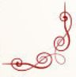
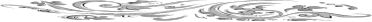

| 『幸せが永遠に続く８つの魔法』～結婚祝いに贈りたい！カップルセラピストのアドバイス～ | |
| 天海道子 & 岡田法悦 | |
| Sea and Sky Couseling Institute (2014) | |
幸せが永遠に続く８つの魔法
～ 結婚祝いに贈りたいカップルセラピストのアドバイス ～
シーアンドスカイ・カップルセラピスト編
時に...あなたの流す涙が
２人のわだかまりを温め、溶かしてくれますように
決して、凍りつかせることなどありませんように
時の流れを漂いながら
涙の海に漕ぎ出して「２人の愛」を救おうとする
勇敢でロマンチックなすべての人に捧げます。
⌘ 目次 ⌘
⌘はじめに
２人の「愛の誓い」には、闇の魔女の「呪い」がついてくる！ものです。「呪い」の謎を解き、永遠の幸せの扉を開ける「鍵」はどこに？ さあ、あなただけの「幸せの魔法」をみつけましょう。
✤ 月曜日の物語 『家具夫・家具妻』
『・・・・・』
...「沈黙は金」と思っ ていたのか、無視していれば無事に過ぎると信じていたのか...
そこには 深い落とし穴が待っているのです。
✤ 火曜日の物語 『Pureなスーパーマン』
『今度こそ、うまくやるわ！』
...誰だって、同じ失敗は繰り返したくないもの。炎のような怒りと後悔の果てには...
頑張れば、頑張るほど、どんでん返しで元の木阿弥という結果が待っているのです。
✤ 水曜日の物語 『おとなしい夫』
『私さえ我慢すれば...』
... ...我慢は美徳？ どちらかが辛抱強いと、美徳がどんどん高まっていきそうですが...
いえいえ、それが破滅の始まりなんです 。
✤ 木曜日の物語 『アラ還マザコン』
『あなたの気持ちはよくわかる』
...甘い蜜に誘われる蝶のように、こんな甘い言葉に、うっとりしているうちに...
言葉だけでもほしい時がありますが、こんなにも大きな代償が待っているのです。
✤ 金曜日の物語 『僕はあなたのもの』
『君は僕のもの』『あなたは私のもの』
...そう考えるのが〝愛〟だと思ってい るうちに、いつのまにか人格を失っていくのかも...
惜しみなく与えつづけることが、信じられない 悲劇を招き寄せてしまうのです。
✤土曜日の物語 『素敵な玉手箱』
『愛があるから、離れていても大丈夫』
...遠距離恋愛を実らせて、スマホやスカイプを介した結婚生活にも自信がもてるあなた...
ついに一緒に生活をはじめた時、人生の最終章で玉手箱が開くのです。
✤日曜日の物語 『リモコン』
『あなたのためを思って』
...あなたのためを思ってくれる人には、ついつい全てを委ねてしまうものですが...
無償の愛を囁く言葉が真実だったのかどうか...わかった時にはもう遅いこともあります。
✤ 空と海の物語 『カウンセリング・ワイフ』
『教わった通り、正しく...』
...勉強熱心 、生真面目で素直な人は要注意！あなたの世界では絶対に正しいはずなのに...
マニュアルも法則も役に立たないことを認識することが、「幸せの魔法」のはじまりです。
⌘ おわりに
8つの物語の中にあなたがいるはずだということに気がついたでしょうか？ さあ、ここからが「幸せの魔法」をあなたのものにできるか、どうかの正念場です。
⌘ はじめに ⌘
「...２人は結婚していつまでも、いつまでも幸せに暮らしましたとさ...。」
おとぎ話をしめくくるこのフレーズは、ハンバーガーについてくるフレンチフライみたいに、不思議と私たちの心の奥までしみこんでいるようです。「結婚の誓い」には、「永遠の幸せ」がついてくるような気がしてしまうのです。
たしかにロマンチックな魔法が続けば、辛い憂き世も、手をとりあって幸せに生き抜くことができるはずなのです。でも、おとぎ話には「「呪い」がつきものです。光の魔女が「幸せの魔法」をかけた瞬間に、闇の魔女は「呪いの言葉」を唱えているのです。
実は、日常生活でよく使う言葉に、闇の魔女の「呪い」がかけられていることが多いのです。たとえば「あなたのためを思って...」とか、「あなたの気持ちはよくわかる...」みたいな。普通のカップルが気づかずに口にしているこんな言葉が、２人の心を引き離してしまうのです。
こんな何気ない「呪いの言葉」で、いともあっけなく罠にかかり、「幸せの魔法」は消えてしまいます。あなたの結婚生活にも、もう「呪いの言葉」が蜘蛛の糸のようにかかっているかもしれませんよ。
この本に記された物語は、あえてホラー仕立てに書かれています。それは、「呪いの言葉」の恐ろしさをきわ立たせるためです。
でも安心して下さい。セラピストとして、私たちがたくさんのカップルと出会ううちに、２人の会話の中に潜んでいる「呪いの言葉」を発見したのです。この謎を解いてしまえば、「幸せの魔法」は続いていくはずです。「呪い」を解くためには、心理学的な「鍵」が必要でした。
この「鍵」が手に入るまでの長い年月、私たちセラピストは、何百組ものカップルの苦い涙を見守るしかありませんでした。でも、あなたはこの本を紐解くだけで、その「鍵」を手に入れることができます。
ここでご紹介するのは、闇の魔女の罠にかかり、運悪く悲劇的な結末を迎えたカップルの８つの物語です。物語の後には、人間関係心理学をベースにしたわかりやすい解説と、カップルセラピストからのアドバイスが書いてあります。
このアドバイスを活用して、まず、あなたの生活の中に巣くっている「呪いの言葉」を見つけてみませんか？ 「呪いの言葉」を見つけることができれば、魔女の「呪い」は消えてしまいます。
そうです。自分がどんな罠にひっかかっているのかに気がついた時、「魔法の鍵」はあなたの手の中にあります。たとえ２人の関係に深い溝ができかけているとしても、この本とあなたの智慧を統合すれば、「幸せの魔法」を取り戻すことができるでしょう。幸せが永遠に続く２人の世界の扉を開けるのは、あなたです。
もし、魔女がかけた蜘蛛の糸が強力すぎて手に負えない時には、私たちカップルセラピストを「ＳＯＳ」のメールで呼び出すことができます！
さあ、安心して「幸せの魔法」をみつける旅にでかけましょうか。
ところで、私たちカップルセラピストは、プライバシーを最も大切なものと考えています。ここに収録した８つの物語もすべてフィクションであり、セラピーの中で私たちが誰かからお聞きした実話は、ひとつもまじっていないことをお断りしておきます。
✤ 月曜日の物語
『家具夫・家具妻』
どんな夫婦でもそうですが、他人から見た感じと、家の中の二人の様子は結構ちがうものです。田中さんちの場合も、そうでした。
夫のススムさんは、言ってみれば〝実力派イケメン〟という感じの、会社では優秀な営業マン。妻のアケミさんは、本当だったらさっそうとしたスーパー・キャリアウーマンに見えるのに「なんで専業主婦やってるの？ もったいない」と、みんなから見られるタイプです。そして、有名進学塾に行きながらついでに小学校にも通っているミカちゃんと、あと犬の小太郎もいる、仲のいいインテリ家族という感じのファミリーでした。
でも、実体は...。ススムさんとアケミさんが目を見て笑いながら話したのは、いったい何年前だったろうと思い出せないくらいすれ違っている夫婦でした。
とはいっても、２人とも自分たちが仲が悪いなんて、これっぽっちも思っていません。家族３人で家にいるとき、２人はいつもミカちゃんに話しかけます。ミカちゃんは、パパから話しかけられればパパと、ママに話しかけられればママと話をします。ミカちゃんも２人が仲が悪いなんて、これっぽっちも思っていません。
小太郎がいれば、２人はやはり小太郎に話しかけますが、２人が直接言葉を交わすことはほとんどありません。
２人の直接の会話といえば、出勤まぎわに、
「それじゃ、行ってくるよ。」
「行ってらっしゃい。今日はいつも通り？」
「いや、ちょっと...何か入ってるかも。」
というのと、時々、
「今週の日曜日から３日ばかり出張が入ってる。」
「あら、今度はどこに行くの？ おみやげ買ってきてね。」
「あぁ。」
というくらいのものでした。
この出張というのが実はクセもので、本当の出張のときもあれば、そうでないときもあったのです。
...あっ、誤解しないでくださいね。べつに浮気をしているというわけではありませんよ。実は、ススムさんは鉄道マニア、いわゆる〝てつお君〟で、時々、有給をつかって地方のローカル線の写真を撮りにいくのです。新幹線の新車両など、新しいものには興味がなく、地方でガタゴト走っている古い電車が好きなんです。２～３日、田舎の風景の中を、高級一眼レフ・デジタルカメラと望遠レンズをかついで、シャッタースポットを探して歩いている時が、ススムさんにとって何ともいえずに幸せな瞬間なのです。もちろん、月刊『鉄道ファン』も読んでいますが、ファン交友会みたいなものには入らない一匹オオカミ派です。
なんで「出張が入った」なんて言って趣味の旅にでるのか...。定かではありませんが、それはアケミさんが熱中していることに、少し関係があるかもしれません。
アケミさんは、いわゆる有名ブロガーなんです。しかもＦＸが専門。ＦＸって、私も詳しいことは知りませんが、外国の通貨を売ったり買ったりする流行りのお金儲けシステムですね。アケミさんのブログは、フォロワーが何万人もいますし、もちろんアケミさん自身、ブログを書きながら１日中為替の動向を見て売り買いもしているので、１日のほとんどの時間をパソコンの前で過ごしています。たまたま外出して道を歩いていればスマホで、電車やタクシーに乗っている時、それに月に２回くらい行くお気に入りの喫茶店でコーヒーを飲んでいる時は、ｉＰａｄとにらめっこをしています。ですから、アケミさんは、ススムさんの趣味や仕事に関心を持つ余裕は全然ないのです。

でも、アケミさんも一応は専業主婦ということになっていますので、毎朝、ススムさんとミカちゃんを送り出して、朝ごはんの後かたづけと洗濯くらいはします。その程度の家事を手早く終わらせると、小太郎を連れて歩いて２分のところにある実家に向かいます。犬の小太郎を預けて、散歩をさせたり餌をあげたり、世話をしてもらうためです。アケミさんにとっては小太郎の面倒をみる時間も、もったいないのです。
実家には母と姉が暮らしています。姉は、一度結婚したものの、すぐに離婚して家にもどっていました。父親はアケミさんが子どものころに亡くなりましたが、母と姉が生活するのに十分な程度の遺産を残してくれていました。
ミカちゃんはというと、学校が終わるとおばあちゃんの家に寄って、夕食のお弁当を作ってもらってから進学塾に行きます。おばあちゃんたちは、ついでに、ススムさんが帰ってくる時間までにアケミさんとススムさんの夕食も作って、小太郎と一緒に届けに来てくれます。お弁当の宅配サービスみたいなものですね。
ススムさんは、アケミさんが毎日そのような生活をしていることは、よく知りません。夕食もアケミさんの手作りだと疑いも持たずに、別室からパタパタと聞こえるキーボードの音をＢＧＭに、ダイニングで５００ ml缶の黒ビールを飲みながら「おいしいね」と食べています。時々、娘のミカちゃんの「今日、おばあちゃんちで...」という話しを聞くと、あぁ、今日はおばあちゃんちに行ったんだな、と思う程度です。
ところが、ある月曜日のことです。
例によって、妻には出張といってローカル線の撮影を楽しんでいたススムさんが、たまたま電車に乗り合わせた３人の若者にかこまれて、財布ごとお金を盗まれてしまいました。運の悪いことに、３人ともみ合ってころんだ拍子に、肋骨を折ったにもかかわらず、他には乗客が１人もいなかったものですから、終点まで助けてもらえずウンウンとうなっていました。
駅員がススムさんを発見して警察に連絡すると、「病院で事情聴取をしましょう」ということになり、近くの病院で手当てを受け、２～３日入院ということになりました。
パソコンのキーボードをパタパタと叩きながらブログを書いていたアケミさんの携帯が最初に鳴った時、「うるさいわね」と最初は無視したのですが、２回、３回と繰り返し着信音が鳴るので、「うるさいわね」と出たら、それは警察からの電話でした。
アケミさんの頭の中ではブログに書く内容が忙しくクルクルまわっていましたから、いきなり「こちらは○○警察署です」と聞いたアケミさんは、一体何が起きたのかわからなくてなって、はからずも大パニック状態になってしまいました。だって、せっかくフォロワーに受けそうな記事の内容がキーボードを叩く指の先まで浮かんでいた瞬間でしたし、何よりもススムさんは仕事で出張しているというかすかな記憶がはるか遠くで点滅していたからです。
そして今はまだお昼前なのに、「１人旅を楽しんでいたススムさんが暴漢に襲われて...」という電話をもらったんです。それは、誰だってビックリするでしょう。
アケミさんは、わけもわからず実家に走り、お母さんとお姉さんに話をすると、アケミさんのパニックがみんなに伝染して大騒ぎになりました。そして、しばらく大騒ぎをした結果、３人はススムさんが「浮気をしているんだ」という判決を下したのです。「１人旅...」などという警察のことばは、もう３人の頭からぶっ飛んでいました。
浮気という判決がおりると３人の心は氷のように冷たくなり、一文無しのススムさんがアケミさんを首を長くして待っているのに、「あんな奴、しばらく放っておこうよ」という罰を与えることが決まってしまいました。警察から何回電話がかかってきても、「どうせ浮気をしてたんでしょ」と取り合わないことも決めました。
３日後に警察から電話を受けたときも、アケミさんはパソコンを叩いていました。
「実は、良くないお知らせです。お気の毒ですが、ススムさんは１時間ほど前にお亡くなりになりました。肋骨を折ったときに肺が傷ついてしまっていて、肺炎が重くなったのです...。」
どんなに冷たい氷の心も、これを聞いたら一瞬にして砕けます。アケミさんは姉と２人で急いで病院に駆けつけました。病院に案内されて横たわるススムさんと対面したアケミ さんは、まるで知らない人を見ているような気もちになりました。
どのくらい時間が経ったでしょうか、アケミさんはススムさんの顔を見ながら、ミカちゃんにパパがどんな人だったかをどう話そうか、ぼんやり考えていました。
すると突然、「まるで知らない人」を見ているのではなく、「本当に知らない人」を見ているんだということにアケミさんは気づき、愕然としました。だって、この人が会社でどんな仕事をしているのかさえ、ちゃんと聞いたことがなかったのですから。
「あなたは、夫というより家具みたいなものだったんだわ。ファミリーという形を整えるための家具だったのね。...もしかすると、私もあなたにとって家具だったのかしら...。」
あなたは、ご自分のパートナーのこと、どのくらいよく知っていますか？
【カップルセラピストのアドバイス】
《呪いの言葉》『・・・・・・』
田中さん夫妻は、夫婦というより、お互いに「結婚している」という世間体がほしかったのかもしれませんね。この物語を読むと、お互い、「アケミさん」「ススムさん」という人を愛して一緒に生活しているようには見えません。それより、テーブルや本棚と同じ家庭の必需品としての「夫」と「妻」がいるような感じに思えてしまいます。
私も、たとえばテーブルを買いに家具屋さんにいけば、その時は気に入った品を一所懸命に捜します。でも、使い始めてしばらくすると、それはただの家具になり、「あるのが当たり前。ないと不便」程度のものになってしまいます。田中さんちの場合は、お互い、いなくてもそれほど困りそうもないので、心の中では本棚に置いた昔読んだ本のように、ホコリをかぶっていたのかもしれません。
この章の『呪いの言葉』は、言葉ではなく「・・・・・」、つまり沈黙または無視です。この人たちは、「行ってらっしゃい」「行ってくるよ」程度しか言葉をかわしません。これでは、会話ともいえません。カップルには会話が必要だと思うのです。愛し合っていれば、お互いに相手の話を聞きたいし、自分の話を聞いてほしい、相手の気持ちが知りたいし、自分の気持ちをわかってほしいと思うでしょう。だって、愛って、お互いに関心をもちあうことだと思うんですよ。カップルなのに、相手への関心を失ったとき、お互いがホコリをかぶった家具になってしまうといってもいいと思うのです。
お互いが気持ちをわかってほしいのに、２人共わかってもらえないと感じるときはケンカになるかもしれません。でも、ケンカは沈黙や無視よりもずっと愛に近いように思えます。仲のいいカップルだって、ときには激しいケンカをするものです。
《あなたが見つける幸せの魔法》
ですから、この章の幸せの魔法はすぐに見つかりそうではありませんか？ だって、今日、あなたはどんなことをしていたか知りたいとか、私はあなたの気持ちが知りたいということを伝えればいいのですから。または、今日、こんなことがあったんだよとか、今私はこんなことを考えてるんだ、ということを聞いてもらえればいいのですから。アケミさんも、夕食の時間くらいは一緒にビールでも飲みながら、３人でそんな話をしたらよかったのかもしれませんね。
ただ、どちらか一方が自分のことだけ話しっぱなしとか、相手に自分の考えを押しつけようという話ばかりでは会話にならないように思います。一人が長々と話していると、相手は「ウン、ウン」と気のない返事をしながら聞き流しているなんていうことも起きそうです。また、「あなたは、私の話を聞いて言う通りにしていればいいのよ」という押しつけばかりでは、自分が犬の小太郎になったみたいで愛情が薄れてしまいそうです。
おしゃべりな人とそうでない人がいるので話す分量は別としても、２人ともが「十分に聞いてもらえた」「わかってもらえた」と満足するくらい会話がはずめばいいのではないでしょうか。もちろん、「話したい」「聞きたい」という気もちの元になっている「パートナーへの関心」を、お互いがたっぷり持っていることの方が大事なように思います。そうすれば、「きょうはどうだった？」「実は、今日ね・・・」といった会話が自然と生まれてくるのではないでしょうか。
関心ということでいえば、たまたま話題にのぼっている「出来事（コト）」や「モノ」への関心より、パートナーの「気もち」に関心を持つことが大切だと思います。「昨日、こんなことがあった」とか、「明日、こういうことをやらなければ」「今日、こういうモノを買った」という「コト」や「モノ」の話しに加えて、そのことで相手がどう思っているか、どう感じているかを聞いたり話したり受けとめ合ったりするのが、「気もち」に関心を持つ コツのような気がします。
さて、それでは、ヒントを参考にあなた自身が無言や無視といった呪いの罠にかからないようにするための対策、そしてパートナーを罠にかけないようにするための対策を立てておいて下さい。考え方だけではなく、いつ、何をどのようにするかなど、具体的にメモしておくといいでしょう。
✤ 火曜日の物語
『Ｐｕｒｅな！スーパーマン』
私が離婚してしまったのは、なぜだったのかしら？ それはたぶん...彼の両親や親戚が、私という人間の人格を否定したからだと思う...けど、なんだかよくわからない。私は彼と同期入社、同じ職場で同じ立場で働いてきたし、彼よりも仕事を覚えるのも早かったし、彼のミスをさりげなくサポートしたりもしてきた。結婚することになったのは、つきあいはじめてから、８年目。彼が実家のある仙台に転勤になったことがきっかけだった...。
彼は私と離れるなんて考えられないっていう様子だったし、私も彼と結婚して家計を預かるのも悪くないかもしれないと考えていた。忙しい仕事に振り回され、休む間もなく８年を過ごし、疲れ切っていたこともあったけど、これだけ仕事を一緒に頑張ってきた彼なら私の能力を評価もしてくれるだろうし、女性としての人生を思うと職場の花から家庭に収まるいい潮時だとも感じたのだ。高学歴の彼なら専業主婦として充分やっていける収入も確保できるのだから、まあまあっていうところかと...楽観していたのだ。
もちろん、結婚式では「才色兼備」などという美辞麗句が飛び交い、これだけの女性を妻に迎えるということで、彼の両親も親戚一同の前でまんざらでもない様子だった。彼は東大を卒業した将来を嘱望されるエリート、私だってかの有名女子大学を卒業しただけでなく、仕事もバリバリにこなすキャリア志向の高いクールビューティーと評判だった。
つまり、少なくても結婚式までは、私は男性が頭を下げて結婚したがる高嶺の花だったわけよね。もちろん、エリートの彼は私にメロメロで「結婚してくれないと、僕、悲しい」とか、「結婚してくれないと死んじゃう」って泣いたことも何度もあったのよ。それほど愛されているなら...まあ、悪くはないんじゃないの...って、感じ！ わかる？
仙台に転勤して、新しい生活がはじまって、私が専業主婦になったとたん、彼の実家の両親が...うるさいのなんのって...もちろん、久々に優秀な息子が帰ってきたんだから、無理もないのかもしれないけど、とにかく息子自慢で、そのうえ息子依存なのよね。まだまだ若いのに老後は頼むだのなんのと...あれやこれや...。それどころか、彼の弟や妹にくわえて親戚中の子どもの学習指導から将来へのアドバイスまで、いちいち彼におうかがいが入るの。まあ、東京じゃ東大なんてそれほどじゃないけれど...仙台では超エリートなのかも...。私にしてみれば頼りない彼が、いつのまにか偉そうな口をきいているのもばかばかしかった。はじめは、そのことで彼をからかったりちゃかしたりしていたけれど、そのうち、ここでは本当に彼を中心に世界が回りはじめていることに気がついた。私は？ 私の考えることは？ 私につきまとって、私と一緒にいたがり、私の意見をききたがり、私にアドバイスを求め、私の考える通りに仕事していた彼はどこにもいなかった。彼の周りには、きらきらした目をした親族が取り巻き、彼は中心で輝いているのだから、彼は満足で得意で安心だったのでしょうね。彼は私と話すのを嫌がるようになって、それに反比例して私は彼に話したくてたまらなくなった。気がついてほしかっただけ...ちやほやされていい気になるなんて、みっともないってこと！ いつのまにか、まるで大人みたいに頼りにされていること...。だって、あなたの給料、親戚づきあいなんかに使うほどあるかしら？ もっともっと楽しみたいのに...。私は、彼の親戚やかつての同窓生にとっては、彼の妻という存在であり、ただそれだけで、誰でもなかった。そのうち、彼にとっても私の存在価値は消えていき、しまいにはお金を渡したくない存在になった。
「何に使ったんだ？」という彼の問いかけに、私は腹を立てた...。彼にとっては、もはや私がどんな服を着ていようが、どんな食事をしていようが...安くあがれば◎、高ければ×、それだけの評価が精一杯になった。ここでの私の仕事は、お金をかけずに美味しいものを作り、考えもなく夫をほめたたえ、安い服をベーシックに着こなし、彼のとりまきにもいつも笑顔でいることだけだった...。子どもをつくる勇気はなかった...。自分ではない彼の妻という人生を送る勇気はさすがになかった...。しかも、私への愛などどこにも感じられなかった。
ある日、私は家を出て、それから東京へ戻り、夫の電話にも出なかった。私を愛しているならきっと慌てて飛んでくるはず...という思いあがりはものの見事に裏切られ、もう一方の思った通り、わずかひと月で離婚届が送られてきた。ふぅ～ん...何よ、これ！ 封を切り離婚届を確認した時、お揃いで買ったティーカップが粉々に砕け散ったような気がした。苦しかった...。仕事もなく、結婚も砕け散り、年齢は３０代半ばを過ぎて、世界の景色は一瞬で凍りついた。離婚はしなくてもいいかもしれない。だけど「もう愛されていない」という現実が痛かった。
この世の誰かに愛されていることだけで、どれだけの安らぎと慰めであることか。「愛されていない」という現実を目の前にして、緊張している自分を感じていた。身体は固まり、不安なことばかりで胸の中まで冷たくなっていた...。けれども、私の頭には怒りの炎が燃えあがり、プライドを取り戻すまでその憎しみの炎は消えそうになかった。悔しく、情けなかった。職場では彼よりも人気があった私、職場の誰もが私を必要としてくれていたのに...。私はなんて愚かな、選択をしてしまったのだろうか...でも、ただただ、愛することを選んだはずなのに...。いつのまにか愛を見失ってしまった...。絶望が私を閉じ込めていた。火曜日の午後の夕焼けが、怒りの炎と一緒にもえあがり、私の人生も燃え尽きた気がしていた。
それから３年。今、あの時と違って、私は３０代最後の一年を満面の笑顔で過ごしている。今は、愛されているし、今度の彼を愛している。あの辛い離婚は、今の幸せのためのトランジットステーションみたいなものだったかも...。今、思い出すと...前の夫は私を活用していただけだった。職場では私の助けや慰めが必要だったし、私の能力で仕事を達成したことも多かった。結婚して仕事を辞め、実家の近くに戻ってみると、彼にとっては私など活用価値がなかったのだろうし、存在価値さえなかったのかもしれない。彼は両親や親戚にとってのヒーローであり、私にとっては気の合う同僚だった。ヒーローとして存在することを彼は選んだということだったんでしょうね。風の便りで、元夫は地元採用の新入社員と再婚したそうだ。男性と話す時には、「ほんと！」「すご～い！」「素敵！」、その３つの単語しか使わないタイプのパープリンみたい。私もだいぶ苦しんだけれど、そこから学んだことも多かったと思う。男性をヒーローにしてあげなかった私が愚かだったと気がついたから...。女性からヒーローとして、頼られることで、男性は女性を守りたい、愛したいと思うものなのだ。夫のミスを見抜いたり、夫がスーパーマンに変身できないロバート・クラークだということを思い知らせるような女性は愛されないってことが身にしみた。そう、つまり男性のスーパーマン願望を刺激し、満たしてあげること、「ありがとう！スーパーマン」と、感謝する立場で存在することが大切だってことを、今の私は充分に知っているってこと！ 今の彼...ふふふ...彼がスーパーマンに変身できるって信じることで、私は愛される女性に変身することができたの。「今度こそ、絶対にうまくやるわ」って決めたから。前の失敗で燃え上がった怒りの炎が、今は愛の情熱の炎になって輝いている。
私、今はね、女性として本当にＰＵＲＥで美しい愛に包まれているの。彼は年下だけれど、まっすぐな愛で私を守ってくれる。
そう、実は...彼とつき合うようになったきっかけは...ね。一緒に残業して...会社から駅までの帰り道、花屋さんの店先で「薔薇の花がほしい」って、彼にねだってみたのよね...１本５百円の黄色の薔薇、花の名前は「ＧＯＯＤ ＴＩＭＥ」って書いてあったかな...。
「仕事で疲れた帰り道、薔薇の花をプレゼントしてくれるスーパーマンに出会うのが夢だったの...お願い！」
って頼んだら、「なんで僕なんですか...おかしいですよ...」って笑いながら、でもヒーローのように花屋さんに入り、きれいにラッピングされた一本の薔薇を私にプレゼントしてくれたの。もちろん私は、「ありがとう！」って感謝感激だったし、その時から彼は私のスーパーマンになってくれたの。いつも私を守ってくれる、本当に素晴らしい男性...。今度こそ、うまくやるわ。彼をスーパーマンとして存在させてあげることで、私は女性として愛されるのよね。そう、今は本当に私たちラブラブで、会社でも皆が「素敵なカップルだね」って言ってくれる。私は幸せいっぱいで、もしかしたら、彼を見つめるときには、目の中にハートとお星さまがキラキラしているってことかな！ 元夫に会って、教えてあげたいくらい。
「こんなに可愛い女性でいられるって、幸せだわ。一緒にいるパートナーのおかげよ。私、もう彼がいないとどうしていいのか、わからない...それくらい頼りにしているの。」
そう言ったら、どんな顔、するかしら？
彼は姉が２人いて、３人めに生まれた男の子で、母親に甘やかされっぱなしで育っていたらしいの。だから、私に頼られたり甘えられたりすることが、彼には本当に新鮮だったみたい。私に感謝されると、とっても嬉しそうな顔をしてくれる。そして、ついに！一か月前、彼がプロポーズしてくれたの。元夫との辛い過去も、その瞬間から祝福されるものになったの...。最初にもらった薔薇の花言葉のように、彼と永遠にＧＯＯＤ ＴＩＭＥ...。幸せってこんなに身近にあるんだ...。ありがとう！ スーパーマン！
いそいそと彼の実家に向かう気持ち、最高の気分、彼は本当に素敵なスーパーマン、運転する横顔を見ながらうっとりしちゃうのも、完全に乙女チックになっているみたい。私は彼にべったりしたいけれど、「結婚の許し」というよりも、まあ、「ご報告」と「ご挨拶」なので、私も彼も、少し緊張しているかな...。
彼の実家に入ったとたん、母親の泣き叫ぶ声がきこえる。彼の姉たちが私を奥へと案内してくれたけれど、座る間もなく彼の母親の罵声が聞こえる。罵倒しているということだけしか、わからない。横にいる彼の父親の視線に凍りつく...。いまいましそうに、殴りかかってきそうな気配、もう一度、凍りついてしまう。そこで私の記憶は途切れた。何を言われたのか、何が起きたのかわからないが、何かが起きていた。離婚歴のある年増女に丸め込まれている大事な息子の目を覚ますべく、家族が一丸となって彼を説得していた。スーパーマンを説得するの？ 私のスーパーマンは私を守るはず...。私は彼を頼っているのがいいのよ。
ふと見ると、私の前に立っている彼は、胸にＳのマークのついたスーパーマンスーツを着た小さな男の子だった。「ママ...お願い」と駄々をこねているみたい...。母親は艶然と微笑みながら、男の子の頭を撫でている...。そして、私に向かってしっとりと語り始めた...。「この子は、スーパーマンごっこが大好きで、困ってしまうんですよ。マントを翻して、高いところから飛び降りてしまうし...。この間も危ないところでした。上の２人が女の子だったので、男の子を育てるのはやっぱり大変ね。後を追いかける体力がいるのよ。スーパーマンごっこの遊び相手に怪我させてしまうのも心配で...。いつもは、ここまでいかないうちに、遊び相手の方が疲れちゃったりあきちゃったりするんだけど...。まさか、あなたも一緒に飛び降りちゃうなんて、本当にびっくりしたわ。何か後遺症が残るかもしれないから、病院で検査しないとね...。だいぶ年上さんだから、ちゃんととめてくれると思って安心していたのに...。ひどいわよ！ もう、うちの子とは遊ばないでね。」
これは夢？ 私は気を失っているのかしら？
【カップルセラピストのアドバイス】
《呪いの言葉》『今度こそ、うまくやるわ！』
この物語の主人公は、よほど自分に自信があったのでしょうね。だから、ＰＵＲＥなスーパーマン坊やの家族にバッサリと切り捨てられた時には、大きな痛手を負ったのではないでしょうか。せっかく「今度こそ、うまくやるわ」と決心したのに。でも、それは「今度こそ、前と違う自分になってみせる」という意味ではなく、「今度こそ、私の素晴らしさをわからせてやる」的な感じだったように見えませんか？ 「前の夫と失敗したのは、彼の田舎の親や親せきたちのせい。今度、自分が傷ついたのも、彼の家族の頭が古かっただけよ。彼もだらしないし...」みたいに相手の側だけを見て、自分には目を向けない人のようですね。もうしばらくして時が傷を癒したら、また同じことを繰り返すような気もします。
カップルは『関係』というものでつながれています。
関係って何でしょう。それは、ＡさんとＢさんの間を結ぶ、化学反応のような〝流れ〟みたいなものだと、私はイメージしています。カップルになる前は目に見えない赤い糸で結ばれているとよくいわれます。それが本当かどうか、私にはよくわかりませんが、知り合いになった時からＡさんとＢさんの間に、目に見えない化学反応のような流れが生まれることは確かだと思うのです。ふつうの日本語で言えば『絆』ということになるのでしょうね。
この流れが何でできているかというと、Ａさんの人柄プラスＢさんに対する思い、それにＢさんの人柄プラスＡさんに対する思いが混ざり合った気流のようなものかもしれません。２人の思いがより合わさった目に見えない流れ、それがどんな色合いや質感、強さを持っているかによって、２人の関係がどんなものになるかが決まります。また、Ａさんの人柄や思いの色合いが変われば流れの質感は変わります。同じように、Ｂさんの人柄や思いの色合いが変われば、やはり流れや化学反応の質が変わります。
良い関係になるのも、イヤな関係になるのも、関係が濃くなるのも薄くなるのも、そういう変化は２人から流れ出て混ざり合う人柄と思いによって起きます。ですから、関係という化学反応の質は、どちらか一方から流れ出るものが変われば変化が起きるということになりそうです。そして、どちらかがその流れを手放したときに関係が終わるのです。
この物語の主人公は、「今度こそ、うまくやるわ！」と言いながら、自分から流れ出る人柄と思いの色合いをまったく変えなかったようです。そして、自分が相手をコントロールすることで、自分の思い通りの関係をつくろうとしているように見えます。でも、これは危険です。自分のコントロールで『関係』という化学反応をうまく調合することができたとしても、必ずどこかに大きな無理と破綻がくるからです。
彼女は、彼を自分のスーパーマンに仕立てようとしました。彼もそれを喜んでいたのは、スーパーマンのように、強く、たくましく、頼れる男になることが、彼の願望でもあったからなのでしょう。そんな願望をもっている...ということは、現実の彼がまったく反対の部分も持っているということです。現実とはかけ離れた、願望のヒーローを真剣に生きようとすればするほど、押しこめられ、抑圧されたもう一人の自分が、存在を主張して抵抗しているはずなのです。
彼から流れ出す人柄と思いの質は、子どもっぽい甘えん坊だったようですね。ＰＵＲＥで素直な子どものように、すぐに人に従ってしまう特徴を持っていたのです。だから、「うまくやるわ！」と決めた彼女にあやつられてしまったのでしょう。
同時に、彼には親との関係もあります。親子関係の中に戻ったとたんに、もう一人の自分、親の庇護を求めるかわいい坊やが出現し、たちどころに願望のヒーローをねじ伏せてしまったのです。
彼女にしてみれば、あまりのことに、口がパクパク...「今度こそ、うまくやるわ！」と思っていたのに、もう一度、同じ失敗を繰り返してしまったのですから...。ショック状態から立ち直っても、自分が何をしてしまったのかわかるまで、長い時間がかかってしまうでしょう。
《あなたが見つける幸せの魔法》
つまり、関係という化学反応の流れを変える手っ取り早い方法は、自分から流れ出る色合いや質感に変化を起こすことなんですね。つまり、自分が変わることです。相手の流れの色合いや質感を、あなたが変えるのは無理なことです。
それでは、ここでちょっと考えてみましょう。
あなたとパートナーとの関係で、「あ、またいつもと同じようなことが起きてる」って感じること、ありませんか。幸せや嬉しい感じを持つとき、どうでしょう。逆に、ケンカになるパターン、２人の間にイヤな空気が流れるときのパターン。そういうものは、ありませんか？ 関係という化学反応は、一定のパターンをつくることが多いようです。パートナーとの関係だけでなく、「私の場合、誰との関係でもいつも同じようなパターンが多い」なんていうこともあるかもしれませんね。
あなたの場合、どんなパターンが多いか思い出して、まずそれをメモしてみましょう。そしてその後に、パターンを破るためにあなた自身から流れ出る色合いをどう変えるかを考えましょう。そしてそう変えるとしたら、どんな時にどんなことをすればいいか、またはどんな時にどんなことをやめればいいか、具体的に考えてメモしてみて下さい。そして、それを実行してみましょう。
✤ 水曜日の物語
『おとなしい夫』
登山とかって、そういう本格的なのじゃなくて、ハイキング程度のものが好きだったんです。なんか、自然に触れると気持ちいいし、職場でのストレスも発散できるような気がして。私の職場って、結構、ストレスがたまるんですよ。ほとんど男の人ばかりで、みんな、なんか偉そうで女性はアゴで使うものみたいに考えている人たちなんです。時々、ものを投げつけてやりたいほどムカつくんですけど、いっつも必死に我慢してるんです。時々、水曜日に有給を取って登山に行ったりするの。水曜日だと、山には男性がほとんどいないから。会社のこと忘れてスッキリして、週の後半、なんとかプッツンしないで我慢できるんです。
ある水曜日、私が好きな山を歩いて景色を見ながら一休みしていたら、「お一人ですか？」って声をかけられたんです。振り向いたら、男の人がニコニコしながら...。あんまりカッコいい人じゃなかったんですけど。髪の毛も薄かったし。でも優しそうで、会社の人たちと全然タイプが違うっていう感じだったので、何となくホッとするっていうか。それで、その日は何となく一緒に山に登ったんです。
途中で、「ほら、見てごらん、○○の花が咲いているよ」とか、「あの鳥の名前知ってる？ ○○だよ」とか、いろいろと教えてくれたんです。だから、この人、自然が好きなんだなって。私は、花の名前とかそういうの全然知らないから、「すごいですね」って言ったら、「また一緒に山に登らない。いろいろと教えてあげるよ」って誘われて。それから、何回か一緒に山に登っているうちに仲良くなって。いつか、山を下ってからにホテルに行ったり...。それで、しばらくして結婚したんです。
すごく優しかったです、彼。優しかったというか、遠慮がちというか、私にとても気をつかってくれて。だから、彼といると安心できました。私の言うこと、なんでもきいてくれるんです。だから、何となく、私がだんだんわがままになっていくっていうか。時々、ちょっと意地悪になったり。でも、彼はそれも楽しんでくれてるみたいでした。
そうそう、一度、私の誕生日に、私、どうしても彼を独り占めしたくて、その日はウィークデーで、もちろん彼は仕事の日だったんだけど、朝「会社に行っちゃ、 ヤだ」ってすねて。結局、身内に急な不幸があったことにして、彼、会社を休んでくれて。で、その日は近くの日帰り温泉にいって、彼も楽しんでくれてました。
時々ですけど、ケンカもしましたよ。彼って、優しいんですけど頑固なところもあるんです。例えば食器の洗い方だとか。食事の後片付けは、たいがい彼がしてくれるんですけど、私もやるときがあるんですね。で、私が食器を洗って彼が拭いてくれたりするときに、私のすすぎ方が気にくわないらしいんです。「それじゃ、洗剤がちゃんと落ちないよ」とかって、結構うるさいんです。私も、最初はがまんして「ごめんね」とか言ってたんですけど、しつこく言われるとムカついて、「じゃぁ、あなた洗って」って大声を出したりして。そうすると、後で「さっきはごめんね」って言ってやさしくしてくれるので、やっぱりすぐに仲直りするんです。
でも、いつ頃からかな。そういう彼の優しさが、少しずつウザくなってきて。...っていうか、彼のは優しいんじゃないってことが、だんだんわかってきたのかも。気が弱くて何も言えずに、我慢しているだけなんじゃないかって思ったのかな。
そういえば、何かでケンカして、やっぱり「ごめんね」ってあやまってくれて、その後、彼が 、私が見ていないと思ったのか、すごい怖い顔して紙クズを力いっぱい壁になげつけているのを、鏡ごしに見ちゃったんです、私。その時、何だか鳥肌が立ってゾッとしたわ。
そういうことがあってからかな。私も時々キレるようになってきて。まぁ、結婚して２年もたてば、やっぱりお互い地が出てきますよね。少しずつケンカも多くなってきて。でも、彼が初めて鬼のような顔をして大きな声で怒鳴ったときには、本当にびっくりしました。腰をぬかしそうになるくらい...。でも、そういうのはそれが最初で最後でした。その時も、本当にかわいそうになるくらい落ち込んでしまって、何回も「ごめんね、ごめんね」って、泣きながらあやまってくれた。私もその時は、怖かったので「ごめんね、ごめんね」って一所懸命にあやまった。きっと彼は「自分さえ我慢すれば...」って、「我慢、我慢」って言い聞かせていたのかも。でも、その時から、何かが代わり始めたんです。もちろん、その時は気がつかなかったんだけど、今考えると確かにそうです。
そうね、彼はあまり話をしなくなったわ。元々、あまりたくさん話す人じゃなかったけど、前にもましておとなしくなったような気がします。それから、一人で外出することが多くなったんです。あ、そうそう、お酒の量が増えたわ。それまでは結構楽しく二人で飲んでいたんだけど、酔っぱらって帰ってくることが増えましたね。私の方はというと、前より怒りっぽくなったかな。彼が一人で出かけて酔っぱらって帰ってくると、なんだか無視されたような気がして彼を責めたり、前より意地悪な気持ちになることも多くなったかな。前は、冗談で意地悪している感じだったけど、それからは本当に意地悪のための意地悪っていう感じ。...それって、わかります？
でも、彼は相変わらず優しかったですよ。だから、だんだん私、女王様になってしまったのかな。彼をアゴで使ったわ。まるで、うちの会社のオヤジたちみたいに ね。そう、それでうさばらししてたのね。会社でオヤジたちにやられた恨みを彼にぶつけて、みたいな。我ながら、とってもイヤなやつになってたと思う。だから、こんな目にあってもしかたなかったんだとは思います。でも、なにもここまでとは思うけど。
それから後、私のキレ方がだんだんひどくなってきた...。自分でもコントロールできなくなってきたんです。彼が何か私の気に入らないことをするとカーッとなって、彼をののしりまくるんです。自分では止められないんです。いつまでも、いつまでも。口でののしるだけじゃなくて、手も足も出るんです。もう、自分でも何やってるんだかわからないし、彼は床に頭をすりつけて「ごめんね、ごめんね」って言ってるんですけど、言われれば言われるほどムカついて、怒鳴る、なぐる、蹴るを続けるんです。私が疲れて倒れるまで。で、気がつくと、部屋の中がグチャグチャになっていて、彼が呆然としているのが見えて、私がとんでもないことをしてしまったことがわかるんです。なので、今度は私が「ごめんね、ごめんね」って泣いてあやまるんです。でも、頭の片隅のどこかでは、「私が怒ったのはあなたのせいだ」という気持ちが、ほんのちょっぴりですが貼り付いている...。で、彼は優しいからいつも「いいよ、もうしないって約束したら許してあげる」って。もちろん、私は「もう絶対にしない」って本気で思うんです。それを何回繰り返したんだろう。
実は、うちのお父さんがそうだったんです。私がそういうことを始めて少ししてから気づいたんですけど。「あ、私、お父さんと同じことしてる」って。お父さんも私と同じで、一度キレると止まらなくなって。子どもの頃は怖くて怖くて、それが始まると、お母さんと弟と三人で身を寄せあって、ひたすら我慢していた。お母さんは、そんなお父さんに愛想をつかして、私と弟をつれて何回か実家に帰ったんです。そうすると、お父さんが迎えに来るんです。とってもしおらしく、しょんぼりして「俺が悪かった。もう二度としないから、帰ってきてくれ」って、土下座して頼むんです。私は、お母さんに「絶対、帰っちゃダメ。お父さん、またやるから」って言うんですけど、お母さんはお父さんがかわいそうになって家に帰っちゃうんです。私はお父さんが嫌いでした。憎んでいました。絶対にお父さんみたいな人とは結婚しないって思いました。だから、彼みたいな優しい人が現れたときには、カッコ悪い人でしたけど、彼しかいないと思って結婚したんです。それなのに、彼じゃなくて私がお父さんみたいになっちゃった...。
私が最後に彼にキレたのは、彼が会社をクビになったときです。私もその時は仕事がなくて、生活も苦しかったのに、彼ったら、あの日、遅くまでお酒のんでベロンベロンに酔っぱらって帰ってきたんです。「どうしたの、そんなに酔っぱらって」って私が聞くと「会社、クビになった」って。それを聞いたとたんに、カーって血が頭に上って、怒鳴る、なぐる、蹴るが始まってしまって。私が気づくと、やっぱり部屋の中がメチャクチャになって、彼が呆然と立っていて。でも、目つきがいつもと違っていたんです。今までのやさしい彼ではなかった。顔が真っ白になっていて、目が血走っていた。私はいつもの通り「ごめんね、ごめんね」って彼にすがりついたんだけど、いつもなら私の背中に手を回して許してくれるのに、身体が固まっていて、上から私をにらみつけているんです。その内、彼は私の手を振り払って、いきなり部屋からバーっと走り出して、私は一人ぼっちで取り残されて。どうしたんだろうと思って茫然としていたら、彼が戻って来て、手には包丁をにぎってた。
気がついたときには、私、この病院のベッドにこうやって横たわってた。身体中、火がついたように痛くて。 でも、私、生きてたんだ...って。
どっちが悪いのかって？ それは、彼に決まってるでしょ。あんなに我慢を重ねなけりゃよかったのよ。ストレスの固まりになって、それで最後に爆発したんだけど、もっと前から我慢しないでちゃんと怒ったりしてたら、こんなことにならなかったと思う。男らしくないわ。
【カップルセラピストのアドバイス】
《呪いの言葉》 『私さえ我慢すれば...』『我慢、我慢...』『辛抱...』
最近、ＤＶという言葉をよく耳にします。ドメスティック・バイオレンス（家庭内暴力）という意味です。この物語には、妻と夫、両方のＤＶの形が表われています。その原因は、両方とも『我慢』や『辛抱』にあります。
人は、大人になる過程で、周りの人たちと気もちよくつきあうために我慢や辛抱することを学びます。でも、我慢しすぎることで、一番大切な人との関係が崩壊してしまっては取り返しがつきません。この物語のように...。
人の心の中に湧く「感情」について考えてみましょう。
たとえば、あなたが上司や友だちに腹が立つことを言われたとしましょう。とてもムカついたのですが、その時の状況ではそれを素直に表現するわけにいかず、怒りをグッと呑み込んで我慢したとします。すると、その後、しばらくはムシャクシャし続けますよね。それで、その日、家に帰ってから家族に八つ当たりしたりして...。
実は、心の中に湧いた感情は、身体の外に放出されるまでずっと心の中でうごめいているのです。嬉しいことが起きた瞬間に、ワァーッと喜んでしまえば嬉しい感情は身体の外に放出されます。悲しいことが起きた瞬間に思い切り泣いてしまえば、その悲しみも身体の外に放出されます。
我慢を重ねて心がパンパンにふくらむと、風船のように割れて壊れてしまいます。心を壊さないためには、風船と同じで、ふくらませすぎないことが大事です。
大人として生きる上で、感情を素直に出していい時といけない時を区別することは大切です。しかし、注意が必要なのは、心という風船はパンパンに膨らめば、いつか必ず割れ るということです。ストレスを発散して心の健康を保つためには、時々、空気を抜くことが必要なのです。
ところが、この物語の夫婦のように、それが上手にできない人が結構多いんです。あなたは、どうですか？
子どもの頃からずっと遠慮がちな人は、我慢するのが当たり前になっていて、自分が我慢していることを意識するのが難しくなってしまいます。物語の中の夫はそうだったのかもしれませんね。しかし、こういう人の場合でも我慢の風船はふくらみ続けます。そして、いつか突然、爆発します。「いきなりキレる」というやつです。周りの人には何が起きたのかわかりません。それもそのはず。本人でさえ何が起きたかわからないのですから。ナイフで道行く人を無差別に刺す事件がよく起きますが、これの極端な形であることが多いようです。
物語の妻の方はどうかというと、こっちはもっと深刻です。夫が何か気に入らないことをすると、ついカーッとなり、自分でもコントロールできないうちに怒鳴る、殴る、蹴るが止まらなくなっています。この妻が、誰に腹を立てているかというと、実は子どもの頃の父親に対してなのかもしれません。というより、〝父親の記憶に対して〟といった方が正確でしょう。
子どもの頃、父親が暴力を振るっている時、彼女の心の中には怖さと一緒に、怒りや憤り、悲しみが同時に湧き起こっていたでしょう。ただ、そういう状況では、彼女は怖くて声も出せずにじっと『辛抱』しているしかありませんでした。この辛抱の風船は、強い力で無意識の闇の中に押し込まれてしまったのでしょう。
こうして無意識の闇の奥底にしまい込まれた風船を、心理学の言葉で『未完の事柄』といいます（トラウマは強い未完の事柄です）。未完の事柄は、何か特定のきっかけがあると、いきなりスイッチが入って爆発します。そして、この物語の妻のようにそれを何回も繰り返します。しかも、彼女の場合、父の爆発の仕方が記憶の中に色濃く刷り込まれているので、自分が爆発する時には最も嫌う父のやり方がお手本になってしまうようです。そ んなこともよく起きるのです。
《あなたが見つける幸せの魔法》
そうならないようにするにはどうしたらいいか、考えてみましょう。
心の風船は、お互いに、あまり大きくならないうちに空気を抜いておくことが大切です。つまり、必要以上に我慢や辛抱をしないことです。そのコツは、嬉しいとか楽しいという感情も、ムカつく、イライラ、悲しいといった感情も、お腹にためずに小出しに出してしまうことです。
実は、カップルって、そういうものじゃないかと思うんですよ。今日、会社であった嬉しかったことやつらかったことを、お互いに分かち合ってわかり合う。それが２人のコミュニケーションというものですよね。
そういう話しをする時のコツを伝授しましょう。とても簡単なことです。それは、「今日、こんなことがあったんだよ」で話を終わりにせずに、その後に感情の言葉を付け加えるのです。つまり、
「今日、こんなことがあって、ワクワクしちゃったんだ。」
「昼間、会社でこんなことがあって、焦っちゃったのよ。」
といった具合に。
問題は、２人の関係の中で湧き起こった感情です。楽しいことや嬉しいことは言いやすいと思います。どんどん伝え合うといいと思います。一方、相手に対してムカついたとか、相手が言ったことで傷ついたとか、そういう気もちは伝えにくいですよね。でも、ここにはちょっとの勇気が必要です。２人の心の健康のためには、大切なルールを守れば、時々けんかするのもいいと思うくらいがいいのです。このルールさえ守れば２人の関係は壊れ ないどころか、より親密になりそうです。
【ルール１】『相手』を責め／攻めずに、『状況』から感じる気もちを表現する。
例：
× 「あなたのせいで...」「あなたが悪い」「あなたにムカつく」
○ 「こういう出来事が起きたことで傷ついた／腹立たしい etc.」
カップルでいるということは「２人で幸せに過ごしたい」ということでしょう。どんなに好ましくないことが起きているとしても、相手をやっつけてしまうのは得策ではありません。２人は、いつもお互いに最大の味方同士でいてほしいと思います。敵視すると関係が壊れます。
【ルール２】「あなたは」という主語を使わずに、「わたしは」という主語を使って感情表現をすること。
例：（相手がバカみたいなことをしているのを見て腹が立ったとき...）
×「あんた、バカだね～」「頭、悪いんじゃないの」「いい加減にしろ」
○「わたし、この状況、ムカつくんだよね」「この状態、腹が立つ」
こういう表現を「Ｉ（わたし）」という主語を使った言い方という意味で「Ｉメッセージ」と呼んでいます（「愛メッセージ」といってもいいかも...）。日本語は、「わたし」とか「あなた」という主語を使わない言語ですが、主語がなくても、そのどちらがついているかは感じ取れますよね。
【ルール３】聞いている側は「受けとめる」
× 「私、この状況、ムカつく」→「そんなの知らないよ etc.」
○「私、この状況、ムカつく」→「そうか、ムカつくのか。」
２人の間のＩメッセージを有効にする大切なスイッチがあります。それは、聞いている側の「受けとめ」スイッチです。これがないと、せっかくのＩメッセージがムダになってしまいます。
ルール３の「受けとめる」というのには、コツがいります。第１に、すぐに反応せずに ひと呼吸置くことです。その間に、「こいつは、私のことを言っているんじゃなくて、自分の気もちを吐き出しているだけなんだ」と頭の中で考えましょう。第２に「そうか、そうなんだ...」と、受けとめたことを言葉で伝えましょう。
最悪なのは「なにを、このヤロー！」と怒ってしまうこと。次に良くないのは、「でもね...」「そうじゃなくて...」と解説や説明を始めること。腹が立っている時に長々と理屈をこねられると、ムカムカする人は多いと思います。もう一つ良くないのは、説教や言い訳を始めること。このどれをやっても、火に油を注ぐだけです。
さあ、ここまで読んできたことをヒントに、あなた独自の幸せの魔法を見つけましょう。嬉しい気もちや楽しい気もちは、感じたままどんどん伝えて下さい。ここで見つけてほしいのは、相手のことで気に障ったときに、我慢せず、素直に身体の外に出せるようにするための具体的な方法です。「あなたを責めているんじゃなくて、この状況に対する私の気もちを伝えたい」という意味で、あなたのパートナーが気もち良く受けとめる準備ができそうなやり方を考えましょう。 あなた自身が呪いの罠「我慢」や「辛抱」で苦しまないようにするための対策、そしてあなたのパートナーを罠にかけないようにするための対策を立てておいて下さい。考え方だけではなく、いつ、何をどのようにするかなど、具体的にメモしておくといいでしょう。
✤ 木曜日の物語
『アラ還マザコン』
「あなたの気持ちは本当によくわかるわ」
そんなふうに真里が言ってくれた時、私は結婚することを決めたんです。今どきの女性が私の苦しい胸の内をわかってくれるなんて...そんなこと無理だとあきらめていたからです。
真里のことが好きだとか気になるとか、感じたことはなかったです。そこにいることさえ、その時まで気がついていなかったんです。
毎週、木曜日の夕食は、その店で食べることにしていました。観葉植物がたくさん置いてある、とても感じのいいお店でしたが、そこに置いてある観葉植物のひとつみたいで、まったく気にもとまらない存在でした。でも、そのひと言で、私は真里と結婚することにしたのです。なんだかほっとしたのを覚えています。とにかく、真里は私の気持ちをわかってくれたのですから。
大学時代の私は、女性たちから告白されることも多くて、そのうちのとびきり美人で頭もいい女性を選んで、心ときめく交際をしていたんです。彼女、素直で可愛いいし、才気煥発で楽しいし。朝から晩まで、食事をするのも眠るのも忘れて話し続けたこともあったくらい気があっていました...。とにかく仲良しでした。もちろん生涯一緒にいたいと、お互いに思っていたんですよ。それが、何気なく郷里の両親のことを話して以来、すべてがダメになっていきました。空中に楽しげに浮かんで漂っていた風船がいつしか沈みこみ、それからはもう現実という床の上をしなびて転がるだけだったのです。
私は一人息子なんです。しかも、家は北海道の果て、父はそこで小学校の教員をしていましたが、私が大学に入った頃には、もう退職していました。母はずっと専業主婦で、住んでいる小さな町と家の中だけが母の世界のすべてでした。父と母には子どもができなかったので、自分たちの老後のためもあったんでしょうねぇ。実は、私は親戚筋からもらわれてきた養子なんです。私にとっては、両親というよりも慈しみ深い祖父母のような感じだったかもしれません。あんな田舎町から私を東京の大学に進学させてくれたのですから、ほんとうにいい養父母でした。それだけの恩をどうやって返したらいいのか...わからないくらいに恵まれていました。北海道の寒さは厳しいですから、私は早く両親を東京に呼び寄せてあげたいという思いで、大学での勉強にも就職活動にも熱が入り、頑張っていました。そんなことを何気なく話して以来、彼女との仲がぎくしゃくするようになりました。
「新しい２人の生活なんて...ないのね。夢を自由に羽ばたかせるなんて無理なのね。あなたの気持ち、わからなくなっちゃう...。私よりも親が大事ってことね。」
こんな行き違いがつづき、食事をするのも眠るのも気づまりな２人になっていき、大学を卒業する頃には、ついに別れてしまいました。
「卒業したらイギリスに住んでみようよ。...ねぇ、しばらく必死で働いてお金ためて...。」
そう言っていた彼女のきらきらした笑顔がスーッと...遠のいて、私は重苦しい現実という靴を履いて歩くようになりました。
社会人になってからつき合った女性には、なるべく郷里の話はしないようにしていました。でも、「両親を東京に呼びたい」なんて、つい口にしてしまった時の恐ろしい現象が今でも忘れられません。親しげに近づいてきていた若い女性たちが、サーッと波が引くように、みんな離れていきました。もしかしたら、こんな私は絶対に都会の女性とは結婚できないのだろう...と、悟った瞬間でした。
真理に両親の話をしてしまったのは、恋愛や結婚の相手とは思っていなかったからです。
美人でないというより、むしろ不細工でした。ざらざらした声は下品で耳ざわりな気もしていました。商業高校を出て小さな運送会社で入力事務をして働いているということで、大学時代のキラキラルンルンな彼女なんかとは住んでいる世界がまるで違っているような、そんな感じでした。木曜日は、その観葉植物が置いてあるレストランで夕食をとることにしていましたが、真里がいたかどうか、私は気にとめたこともありませんでした。後になってから店の主人が言っていたことを思い出します。
「あの子は人の弱みを握るのがうまいんだ。私もね、つい余計なことしゃべらされちゃうんだよ。いい結婚相手を紹介しろって頼まれて、木曜日にいつも来るよって...あんたのこと、教えちゃったんだよ。」
そう言えば...私は店主に、実家のことで愚痴をこぼしたことがあったのかもしれません。いつのまにか、木曜日に食事に行くと、必ず真里が横に座っていて、熱心に私の話を聞いていたのでした。
「あなたの気持ち、よくわかるの。私、お年寄りが大好きだから、一緒に住むなんて、何でもないわ。もし私なら、夫の両親と住むのも悪くないと思うわ。」
それはキラキラルンルンの魅力あふれる若い女性たちからは、一度も聞いたことのない言葉でした。真里はなぜか、北海道に実家があることまで知っていて、それもロマンチックだとか、素敵だとか、言ってくれるのです。好きになったわけでも何でもなかったのです。真里の顔さえ、何の印象も残っていないのですから。でも、その言葉が嬉しくて、その言葉だけで、私は真里と結婚しました。これで、やっと私の両親を東京に呼べる。温かい、にぎやかな冬を過ごさせてあげられる、と思いました。
とにかく大急ぎの結婚だったので、良い物件がなかなか見つからなくて、最初に住むことになったのは真里の実家近くの１ＬＤＫのフローリングのマンションでした。私の仕事が忙しいので、真里と真里の母親が探してくれたのです。
「あなたの気持ちはよくわかるわ...。ご両親にゆっくり過ごしてもらえる家を早く見つけたいわね。そのために今は１ＬＤＫで我慢しましょう。」
真里がそんなふうに言ってくれるので、大きな家を建てるために一生懸命、出世を目指して働きました。
しばらくすると、真里は妊娠して、仕事も辞め、つわりもひどく体調も悪いからと...実 家近くのマンションを離れるわけにはいかなくなりました。それから、男の子、女の子と...次々に４人の子どもが誕生しました。真里は子どもが大好きだと言うのですが...。
「４人の子どもの世話をしてたら、体力の限界よ...。過労死しちゃうかも、疲れ果てるわ」
ということで、子どもの世話は実家の両親や保育園にまかせきりでした。
子どもが４人になり、１ＬＤＫのマンションから２ＬＤＫには移りましたが、北海道から両親が訪ねてきても、泊めてやるスペースさえないのですから、両親が東京に来ることもないまま、両親を訪ねることもできないまま...８年の歳月が流れていきました。そろそろ家を建てて両親を呼びたいと強く思うようになり、老いていく両親を思うと...きりきりと胸が痛むのでした。
「あなたの気持ちはよくわかるわ...。今度のお正月には、おばあちゃんやおじいちゃんを孫と一緒に過ごさせてあげたいわね。」
私の痛みを封じるように、何か私が言おうとすると、真里は同じ台詞を繰り返すのでした。
それからの８年間は、夏休みと冬休み、子どもたちを私の両親のもとで過ごさせるようになりました。私が子どもたちを連れて行くのですが、４人のやんちゃ盛りの子どもたちを連れていくだけでも、大変なことでした。老いた両親にとっては、夏の一か月半、冬の一か月の間、孫たちの世話をするのはどんなに大変かと心配になってしまいましたが、私の両親にとっては嬉しい時間にちがいないと思うようにしました...。疲れると言いながらも、両親は４人の子どもたちの世話を本当に良くみてくれていたものですから。
子どもたちのいない夏と冬の間、真里は実家の両親と韓国やタイに旅行することが多かったですね。韓流スターやタイ料理がお気に入りでした。でも、このごろはヨーロッパやオセアニアにまで旅行先を広げているようです。真里たちは本当に仲の良い親子でした。一人娘の真里を私のような長男と結婚させるのは気が進まないはずなのに、私の気持ちをわかってくれたのでしょうか。でも、時々、妙に満足げに話しているのを聞いたことがあります。
「心配しなくて大丈夫。年取ってから引っ越しなんてできないよ。体に障るし...お父さんの退職金も、全部残ってるみたいだし...嫁の世話なんかになりたくないんじゃないの。」
私は仕事があるので、子どもたちを送って行く時と迎えに行く時しか、北海道の両親に会えないのですが、みるみる疲れ切っていくようで心配になることも実は多かったのです。そんな時にも真里は...私の気持ちをわかっていて、安心させてくれるのです。
「おじいちゃんは、小学校の先生だから子どもの教育が生きがいよ。おばあちゃんも孫たちと過ごせることがどんなに嬉しいかしら...。にぎやかで楽しいわよね。あなたの気持ちはよくわかる...。だから、お休みの間に私たちふたりで、いい家をさがしましょうよ。」
そんなふうに言ってくれるので、子どもたちのいない間、私も土地を選び、家の設計やローンの組み立てに一所生懸命になりました。真里と結婚して、すぐに両親を呼び、暖かい冬を過ごさせてあげようと思ったはずなのに...いつのまにか年月が流れていました。目的がこんなにも果たせないことにイライラもしてきました。私の気持ちをわかってくれる真里と結婚してから、もう16年も経ってしまったのですから。
やっと家を建てることが決まりかけた冬のある日、とても寒い冬でした。父は脳溢血で倒れて、そのまま亡くなりました。一人残された母は、絶対に家を離れないと言い出しましたが、それを聞いたとたんに、なぜか、真里は急に家の建築契約をしたのです。
素晴らしい大きな家が完成したのは次の年、父の一周忌が近い晩秋のことでした。真里と結婚して 18年の歳月が流れていました。
「お母さんのことだけど、高齢でしょ。高齢になってからの転居って認知症のリスクがあがるらしいわよ。大丈夫かしら？ あなたの気持ちはよくわかるから...よく考えてね。」
真里の言葉に心が揺れてしまいました。
私はどうしていいのか...わからないまま、父の墓がある小さな町を離れたくないという母の希望をただ黙って聞いていました。子どもたちも成長し、もう休みを北海道で過ごす こともなくなり、母は本当に一人ぼっちになってしまったのだと思います。
それから３年あまり...母の住む北の小さな町の役場から電話がありました。
「高齢者の一人暮らしは危ないと、近所の人からも苦情がありまして...ボヤ騒ぎがあったみたいで...。」
びっくりして、私は母を連れて帰りました。でも、大きな家の和室でゆっくりと休んでいる母を見て、ほっとしていられたのは、わずかひと月でした...。真里がデイケアのサービスを頼んだのは知っていましたが、それからすぐに、母は認知症と認定されてしまったのです。
「あなたの気持ちはよくわかるわ...。お母さんの安全を考えたいわよね。施設にいた方が寿命も延びるらしいわよ。」
真里の言うとおりです。私は母を施設にいれることを決めました。
「あなたの気持ち、よくわかるわ...。２人でお母さんの世話をしましょうよ。とくにあなたは、お母さんに毎日、会いにいってあげてね。 あなた、もう定年でしょ。毎日、行ってあげなくちゃ...。親孝行してあげて下さいね。」
真里にそう言われると、私はこの時でさえ、やはり嬉しくなったのです。でも、それだけではありませんでした。
「子どもたちの学費、この頃、大変なの。大学院に行きたいとか留学したいとか...。あなたの気持ちがよくわかるから、こんな大きな家、建てちゃったけど、本当は大変なのよ...。ねえ...お父さんは、北海道に家と土地、それにいくつか貸家も持ってたでしょ。退職金や年金も、手つかずで残ってるって...お母さんが言ってたの。全部、売って整理して、こちらに持ってきましょうよ。お母さんを楽しく生活させてあげたいし、孫たちのために使うなら、お母さんも大喜びでしょ。」
こんなにも私の気持ちをわかってくれる真里だから、私も本当のことを言ってしまおうと思って...ただただ真里を見つめていました。見つめているうちに、真里の不細工な顔や
ざらざらした声が、最初に会った時の記憶とぴったりと重なりました。呪いでもかけられていたのだろうか...？
なぜ...真里が私の妻なのか？ なぜ私は真里と一緒にいるのだろうか？ とても不思議なことに思えてきました。子どもたちも真里も、まったく違う世界の人間に思えて、私は話し出す時、ちょっと身震いしました。
「父さんが亡くなった時、遺産は全部、母さんに相続してもらったんだよ。それが一番いいと思ったし...。でも、母さん世間知らずだから...オレオレ詐欺とか、健康グッズ、訪問販売...とにもかくにも、あらゆるものにひっかかっていて、スッカラカンどころか借金までしてたんだよ。一人暮らしだから、無理ないかなって思うよ。それでも、お年玉とか、お祝いとかで、孫たちのために、だいぶ無理してお小遣いをあげてたらしいんだよ...。孫たちが可愛かったんだろうね。北海道に母さんを迎えにいってみて、もう何も残っていないことがわかったんだ。ほんとうに母さんのために建てたこの家があって、助かったよ。真里、ありがとう。キミのおかげだよ。」
真里が小さな叫び声をあげたようだけれど、いつも私の気持ちをわかってくれるはずだから、気にもとめませんでした。結婚を決めた時から「あなたの気持ちはよくわかる」その言葉だけが私たちの絆だったのですから。その言葉につながれていたのですから。ざらざらした、真里の声が何かを言ったようです。その時、あの観葉植物がいっぱい置いてあったレストランの風景が浮かんできました。木曜日、夕食をとっていると、プラントの枝葉の隙間から、こちらをうかがっている真里の目を感じたのです。そして、今も同じ目で私を見ていることに気がつき、私は冷たい汗が首すじから流れ落ちるのに耐えながら、言葉をつづけました。
「でも、母さんの施設はもう契約したんだよ。介護施設ってお金がかかるし、入所待ちの順番もあるみたいだし、新しい施設がちょうどできたところだったから、ラッキーだったよ。ちょっと高いけど...しかたないよ。保証金が必要だったから...この家を売ったよ。母さんのために建てた家だから、母さんが住めなくなってしまったら意味がないからね。もう大きな家はいらないんだよ。わかってくれているよね。」
なぜか真里は、いつものように「あなたの気持ちはよくわかるわ」とは、言ってくれませんでした。私はいつもの呪文がないことに、とても戸惑っていました。なんだか、ぞくぞくしてきて急に夢から覚めたような気がしました。真里のどんよりした顔がひきつっていることに少し怯えながら、私はつづけました。
「居心地がいい最新の施設でね。認知症でも、何も心配はいらない感じで、ほっとしたよ...。何より母さんが気に入ってくれたから。楽しそうだよ。何から何までプロがきちんと介護してくれているよ...。真里の言う通り、家で世話をするのは無理だったね。母さん、『東京はいつまでも暖かいね』って...。ほんとうに良かったよ。高くて手が出ないと思ったけど、思い切ったよ！ ローンもあって、この家を売ったお金だけじゃ足りなかったから、私も早めに会社を辞めることにして、退職金も全額入れて保証金を最初に払いこんじゃった。だから、もう母さんがどんなに長生きしても大丈夫。あとは月々、母さんの年金だけでちょうど払っていける...。これで...やっと自由になれた気がするんだ。真里には本当に感謝しているよ。これまで本当にありがとう。私の気持ちをわかってくれて。」
真理には本当に申しわけないことをしてしまいました。新しく建てた家を出る日、引っ越しのトラックは２台でした。真里は実家に戻り、私は学生時代を過ごした懐かしい町に小さな部屋を借りました。真里と一緒にいるつもりでしたが、きっぱりと断られただけではなく、罵倒されました。
「仕事もない、財産もない、家事もできない。あなたなんか、夫として何の価値もないわ...。ありがとうなんて言われても、許さないわよ。血のつながった自分の子どもより、血のつながらない母親の方が大切だなんて信じられない人ね。何十年も一緒にいたのに私の気持ちなんて、きいてくれたこともなかったわよね。頭がおかしいのよ。時代遅れのマザコン、還暦に近いくせに...アラ還マザコン！ 二度と顔を見せないでね。」
確かに私はマザコンなのでしょうが、いったい私は長い夢でも見ていたのでしょうか？ 今ごろ、目が覚めたのでしょうか...私はショックでした。
その後、真里からは、離婚調停の呼び出しがあり、真里の弁護士は、なんとか少しでも財産を取り戻そうとしていました。でも、もう私には何もありませんでした。真里はあきらめるしかなかったのでしょう。即刻、離婚をつきつけてきたのは、私という人間には何の魅力も未練もなかったからでしょう。実家に戻るなんて...真里もマザコンだったのでしょうか...。
でも、施設に入った母がニコニコと暮らしている様子を見ていると、もう、ただほっとして、真里に罵倒されたことも、みじめな貧乏生活に転落したことも、どうでもいいことのような気がしてくるのです。暖かい東京で、母が安楽に一生を送れること、私のこともわからなくなっていくみたいだから、たとえ私が死んでも、もう大丈夫だということが、私を重い呪縛から解放してくれました。安堵の気持ちだけで充分でした。真里は実家に戻り、にぎやかに両親にと生活しているし、子どもたちは独立しています。これで良かったのです。
どんな巡りあわせでしょうか...。またその街になじんできた頃、大学時代の散歩道で...あの別れた彼女と再会したのです。キラキラした彼女の笑顔がスーッと視界に入ってきた時、長い眠りから覚めたような気がしました。不思議なことに、彼女の笑顔はよく一緒に歩いた頃と変わらない感じなのです。同じ場所で 40年後に出会うなんて...ほんとうに神様っているのでしょうね。彼女と再会した一瞬が、真里との長い結婚生活すべてよりも生きている実感がありました。
そういえば、真里がいったいどんな顔でどんな表情をしていたのかさえ、思い出せないのです。そう、真里がどんな女性なのか、今でもわからないです。一緒にいたことがあったのだろうか...。何十年も一緒にいたなんて、私はどこにいたのでしょうか...。
キラキラの彼女ですが、私と別れて卒業した後、ジャーナリストとして世界中を取材し、大恋愛で結婚したけれど、別れてしまったそうです。それから、ロマンチックな恋をいく つか体験し、大失恋もいくつかあり、今は一匹の猫と住んでいるそうです。
「あなたのこと...どうなったか...考えていたら、ばったり出会うなんて...。びっくりしたわ。還暦のせい？ もう一度、やり直せる気がするなんて、こんなことってあるのね...。あの頃は、あなたの気持ちがわからなかった...。それで別れてしまったけど、今はただ一緒にいることを楽しめるような気がするわ。」
時々、食事をするのも忘れて話しこんだり、ケンカもするんです。昔と同じように...。
「ねぇ、北海道っていいところよね。住んでみてもいいかも...。」
彼女の声を聴いていると...やっかいな絆から解放されて、やっと私らしくいられる気がします。もう安心して...楽しい時間を過ごしています。 40年が夢だったとすれば、これからのわずかな時間も夢なのでしょうね。夢だとわかってしまうと...楽な気がしてきますが、私にとっては、これからが本当の人生のように思えるんです。
【カップルセラピストのアドバイス】
《呪いの言葉》『わかる』
この物語の夫は、「あなたの気もちは本当によくわかるわ」のひと言が心にしみて、真里との結婚を決めました。彼は、この言葉の魔力にやられてしまったんですね。両親との同居が結婚の条件だったのに、それを満たしてくれないガールフレンドたちとの出会いと別れ。その繰り返しでした。それに疲れていた時に、魔力をもったこの言葉が彼の心の扉をこじ開けてしまったのでしょう。また、真里にすれば、この彼との出会いを逃してしまったら、いつ結婚できるかわかりません。
ところで、レストランの店主が「真里と話す人は、つい余計なことをしゃべってしまう」と言っていました。それは、真里が聞き上手だったということです。『聞き上手な人』とは、つまり『わかってくれる人』ということだと思います。私も、自分の気持ちをわかってくれる人になら、つい何でも話したくなってしまいます。真里には結婚したいという望みがあったので、聞き上手は大事な武器だったのだと思います。
そういう意味で、わかってくれないガールフレンドたちに疲れた彼と、結婚したい聞き上手の真里との出会いは、縁結びの神に引き合わされたようなものだったのですね。
ところで、あなたが「これって～だよね」と誰かに言ったときに「わかるよ」と言われたら、その「わかるよ」はどんな意味に聞こえるでしょう。「私もそう思うよ」という同意の意味に聞こえるのではないでしょうか。あなた自身がそう言うときも、同じ使い方をするかもしれませんね。
でも、これが意外に要注意なのです。「わかる」を呪いの言葉にあげたのは、「わかる」と言っている人が、本当にわかっていることがすごく少ないからです。
例えば、友だちに何かを頼んで「よし、わかった。大丈夫」と言われたら、たぶん安心してまかせます。なのに、結果を見たらイメージと全然ちがっていたなんてこと、たくさんありますよね。
あるいは、
「私、結婚したら仕事をやめたいと思ってるんだ。」
「わかるよ。ボクもそうしてほしいと思ってる。」
と言っているカップルの気もちの中に、
彼女：仕事をやめて旅行に行ったり、カルチャースクールで好きなことを学んだりして、のんびり楽しく過ごしたいと思っている
彼 ：子どもを５人生んで、忙しいお母さんになった彼女を描いている
みたいに、「仕事をやめる」ことの意味とイメージがズレていることもよくあります。
だれでも、人の話を聞いていると、心の中に自分なりのイメージが浮かんできます。子どもがたくさんほしいと思っている彼は、「仕事をやめる」という彼女の言葉を聞いたときに、心の中に５人の子どもたちと公園でたのしく遊んでいるイメージがフワっと浮かんできたのでしょう。だから、「わかるよ」と言ってしまったのです。
つまり、この「わかるよ」は、彼女が言っていることへの「わかる」ではなくて、イメージに浮かんでいる自分の気持ちが「わかる」ということなんですね。私たちカウンセラーのような話を聴くプロでさえ、相手の心に浮かんでいるイメージと全く同じイメージを浮かべるのは不可能です。だから、「あなたの気もちは手に取るようにわかる」なんて、口が裂けても言えないんです。
ですから、私も大事な話の時には特に、「あなたの気もち、よくわかるよ」とか「すごくわかる」と言われたら、ちょっと注意するようにしています。同時に、人の話を聞いて「わかる、わかる」と言いそうになったときには、本当にわかっているかどうか自分をチェックするようにしたいと思っています。
幸せの魔法を考える前に、この物語を読んでもう一つ気づいたことがあるので、それもお話ししておきましょう。
何かというと、『条件付きの結婚』ってやっぱり上手くいかないんだな、ということです。この物語の夫は、親との同居という、もしかするとマザコンチックな願望からくる希望を持っていました。だから、その条件に「わかるわ」と言ってくれる真里と、つい結婚してしまいました。真里にとって、もとはといえば、結婚してくれることそのものが条件だったのでしょう。
結婚は、やはり愛しているからするものだと思います。それ以外の「～のために」という条件をもって結婚すると、この物語のようにそれを実現する代償が高くついたり、「～のため」が実現しなかった時に失うものがとても大きくなってしまうようです。
《あなたが見つける幸せの魔法》
だますために「あなたの気もちはよくわかる」と言うのは、最悪だと思います。この物語の真里は、最初は結婚願望を満たすためにそう言ったのであって、だますつもりはなかったようです。でも、もしかすると後半は「わかる」という言葉で夫をうまく丸めこみ、自分の欲望を満たしていたのかもしれません。そして、最後には真里自身、財産も夫も失ってしまいました。
次に好ましくないのは、気休めの「わかる」とか、そう言っておけば波風が立たないと思って言う「わかる」でしょうね。「わかる」と言ってくれると、相手はホッと安心します。でも、最後には「わかるって言ってたのに、結局わかってくれてないじゃない！ ウソつき！」ということになってしまいますよね。
でも、そのことで相手を責めたりできるかというと、それはちょっとちがうような気もします。こういうような日常会話で「わかる、わかる」と無責任に言っているのは、自分自身なのかもしれないのです。「幸せの魔法」はまず、自分自身に問いかけることにあります。「いったい何をわかってほしいのかな？」と、自分の心のメッセージにもう一度耳を傾けてみましょう。
本人にさえ、ぼんやりとしたイメージでしかないとすると、もうもうと...妄想が渦を巻いて、まったく異質のモンスターになっているかもしれないのです。この物語の主人公の男性も何度もチャンスがあったはずですが、わかってほしいのはどんな気持ちなのか、最後の最後まで自分でもよくわからないままだったのでしょう。だから、夢でもみていたように、実感がない生活だったのです。
「幸せの魔法」のヒントですが、「わかる」と言いたくなったら、自分が本当にわかっているかどうか確認するのがいいと思います。つまり、「それって、○○ということ？」と聞いてみたり、「もう少し詳しく聞かせて」とお願いしたりするということです。反対に「わかる」と言われて嬉しかったとしても、相手がどんな風にわかってくれたのかを確認することや、「私がわかってほしいことって何だっけ？」ともう一度、自分自身に問いかけてみるといいでしょう。
あなたは「わかる」と言いたがるタイプでしょうか？ それとも「わかる」と言われてその気になってしまうタイプでしょうか？
ヒントを参考に、あなた自身が呪いの罠「わかる」にかからないようにするための対策、そして罠にかけないようにするための対策を立てておいて下さい。考え方だけではなく、いつ、何をどのようにするかなど、具体的にメモしておくといいでしょう。
✤ 金曜日の物語
『僕はあなたのもの...』
愛が深い海の色をしている時、私の心は暖かくうねる大海原のように金色に光っている...。「僕は君のものだよ」って、私の耳元であなたがささやく時、私は人魚が泡になる瞬間を味わうの。愛と美の女神「ヴィーナス」の幸せって、これなのよ。今、私は最高に幸せよって、そう感じるわ。私はあなたのもの。
こんなラブロマンスみたいな言葉づかいが似合う恋を、この年になった私が味わおうとは思っていなかったの。最近の言葉でいえば、アラサーをとっくに通りこしてアラフォーとかいわれる年になった私にとって、それは衝撃的な体験だった。
私だって、もちろん結婚願望はあったわよ。何回か出会いはあったけど、ぜんぶ中途半端に終わってる。なぜって、私にもよくわからない。仕事のせいかもしれない。ＩＴ系の人たちって、私もそうかもしれないけど、なんか洗練されていないのよね。私も仕事が忙しかったし...。ＩＴ系っていうと、みんなデジタルな頭を持っていてクールに割り切ってものを考えるみたいなイメージがあるかもしれないけど、実はそんなんじゃない。仕事の中身はそういう面もあるけど、人づきあいが下手な人が多くて考え方が結構ドロくさかったりする。私も、プロジェクトマネージャーとかやっていて、会議でもあきれるくらい精神論が飛び交ったり、高校時代の体育会系の部活のミーティングみたいな青さが匂って、むせてしまいそうになることもある。
でも、今度の彼は全然違うの。もちろん、年下よ。ちょっとホストっぽい感じもあるんだけど、そこも私のお気に入りなの。話すこともちょっとキザだけど、何よりすべてが洗練されてるのよ。彼とつきあってから、やっと私にも「T.G.I.F」って感じがわかるようになったの。必死に働いて仕事を終えた金曜日に思わず叫んじゃいそうになる。
「Thank God. It 's Friday!」
彼と過ごす金曜日の夜は、ほんとうに私、ヴィーナスの気分になっちゃう。
いつの間にか、彼、私のマンションに住みついていた。本当に「いつの間にか」っていう感じ。私は、ちょっと大きいプロジェクトを抱え込んだばかりだったから、毎日、残業続きで、私にとっては寝に帰るだけのマンションなんだけど、彼にはすごく居心地がいいみたい。都心のタワーマンションだから家賃も高いんだけど、彼が住んでいるなら払いがいがあると思ったわ。私が疲れて帰ると、彼、簡単なおつまみとか作っておいてくれて、ワインを飲みながら私の愚痴とかゆっくり聞いてくれるの。そうすると不思議に疲れがとれて「よし、明日も頑張るぞ」という気もちが湧いてきて、朝になると元気に会社にいけるのよ。朝ごはんも、彼がつくってくれるようになった。私って、朝、しっかり食べないと夜までもたないの。だから、すごく助かった。
ときどき、彼、自分の子どもの頃のことを話してくれた。結構かわいそうな子ども時代だったみたいよ。経済的にも恵まれなかったみたいで。何よりもお母さんがお父さんに大事にされなかったみたい。そういう話しを聞くと、私、ついホロっとしちゃうんだ。お母さんは彼のこと、すごく可愛がってくれたらしいけど、お父さんはお母さんを、まるで自分の道具みたいに扱ってたっていうんだもの。私は人を道具扱いするのって大嫌いだから、なんかその手の話を聞いてると、すごく悲しくなっちゃうのよ。
彼がお父さんと全然似てなくてよかったわ。すごく優しいの。「僕は君のものだよ」って、毎日言ってくれた。彼、仕事を探してたんだけど、「仕事がみつかって収入が安定したら結婚してほしい」って言ってくれたの。私みたいなおばさんでいいのかしらって思ったんだけど、彼、本気だったのよ。
いつか、彼の口癖がうつって、私も「あなたは私のものよ」って言うようになっていた。そう言えることが嬉しかった。だって、彼、ペットみたいに可愛いんだもの。だから、私、彼に主夫でいてほしいって頼んだわ。女の主婦じゃなくて、「夫」っていう字を書く主夫。その頃から、ずっと私が外で仕事をして彼が家事をしてくれる生活だったから、すでにそうだったんだけどね。ちゃんとそう決めると、彼は本当に私のものになったのよ。私のために家にいてくれて、買い物も、掃除も、炊事も、家のことを全部やってくれて、そして私を愛してくれる。そう思ったら、とっても嬉しかった。彼も私のいうことを、よくきいてくれた。家事が終われば彼の自由時間だからもちろん何をやっていてもいいんだけど、私、彼に何か専門技術を身につけてほしかった。だから、学校に行くことを勧めたの。何か手に職を持っていたら、年取って私が退職しても安心でしょ。彼が何の学校に行き始めたか、わかる？ ペットのトリミングとかの教室。ペットがペットの面倒の見かたを習うなんておかしいねって、２人で大笑いしちゃったわ。
でもね、彼が学校に通い始めたら、すぐに困ってしまったわ。学校が朝早いから、朝食をつくる時間がなくなっちゃったの。いつも、シリアルにミルクみたいなのだと、私、夜まで身体が持たないのよ。残業しないと２人分の生活費、稼げないから、かわいそうだったけど学校行くのをやめてもらって、何か家で出来る通信教育を見つけて資格をとりなさいって言ったの。彼、それでもやさしかった。「２人のためだから、仕方ないね」って。
ちょうど、その頃よね。彼の故郷で、中学のクラス会があるから泊まりがけで行きたいって彼がいい始めたのよ。その時、ちょうどプロジェクトが最後の追い込みで、彼に行かれたら困るから、「お願いだから、行かないで」って頼んだの。そうしたら、彼、へこんでたわ。でも、やっぱり生活していけなくなったら困るでしょって言ったら、彼、不機嫌な顔をして私をにらんだのよ。そんなの初めてだから、私、頭が真っ白になっちゃった。だから、つい「誰のおかげで生活できてるのよ」って...。彼ったら「僕は君の道具じゃない」って言うのよ。道具だなんて、そんなの私、大嫌いだし、そんな口答えも初めてだったから、私、もっと混乱して...。私もずいぶん仕事でストレスがたまってたのよね...。
その時よ。声が聞こえたの。『彼を逃がしてはダメ』って。エコーがかかった低い声が、頭の上から...。だから彼をパソコンの前に引っ張って行って座らせた。そして、外から部屋に鍵をかけたわ。鍵はもちろん部屋の中からでも開くんだけど、彼、それ以上、口答えはしなかったし部屋から出てもこなかった。それがまたムカついて、部屋の扉を開けたら、彼、パソコンの前じゃなくて、部屋の隅にうずくまってた。それを見たら、また声が聞こえたの。『彼を逃がしてはダメ』って。だから、また彼の腕をつかんでパソコンの前に座らせたわ。彼、抵抗しなかった。...私、本当に気が狂ってたとしか思えないんだけど...、昔飼っていた犬の鎖で彼を机にしばりつけて、南京錠をかけたのよ。そうしたら『それでい い』って、また頭の上から声がしたの。だから、「通信教育申し込むまで、はずしてあげないからね」ってやさしい声で言って、私、そのまま寝ちゃったの。
夜中に何か騒がしくて目が覚めたら、彼が吠えてた。「トイレに行かしてくれ」って。でも、パソコン使った形跡がなかったら、ゴミ箱にビニール袋を入れてトイレ代わりに置いていったの。そうしたら、また声が...。『それでいい』って。それから何日経ったか、私にはわからなくなった。今思えば、異常な生活だった。テレビのニュースで、人を監禁して死なせたっていうの、やってたでしょ。人を、まるでモノ扱いするなんてひどいって、私もあれを見ながら腹を立てていたのよ。あんなの、当然、私には関係のない事件だったはずなのに...。でも、あの声が私に何回も『それでいい』って言うの。最後に見た時、彼衰弱していた。でもまだ生きていたわよね、先生。教えて、先生。えっ？ ほんと？ ほんとに無事なのね。あぁ、安心したわ。
わからないの、今でも。私にどこでどんなスイッチが入ってしまったのか...。私、幸せだったのよ、すごく。だって、彼、本当に可愛かったし、私の言うことよくきいてくれて、何でもやってくれたんだもの。鎖でつないでから何日か経った頃に、彼にもそう言ったの。そうしたら、「別に僕じゃなくてもいいんだろ。君の忠実なペットでありさえすれば」って言うの。その時、「そんなことない！ あなたじゃなければダメなの。あなただけが私のモノなのよ。ペットのくせに、生意気なこと言わないでよ」という言葉がふいに口をついて出たわ。先生、私、なんでモノとかペットとかって言ったんだろう。私、病気？
【カップルセラピストのアドバイス】
《呪いの言葉》『君は僕のもの』『あなたは私のもの』
「僕はあなたのもの」とか「あなたは私のもの」とか、古い映画に出てきそうなセリフです。しかし、今でも相手を〝自分のモノ〟のように思ってしまうカップルたちが、ずいぶんいるように見えます。これは結構こわいことだと思うんです。「愛する」ことと「自分の持ち物にする」ということは、全然違うことだと、私は思うんです。
この前、アメリカで 10何年も前に誘拐された女性たちが、ずっと監禁されていた家からやっと逃げ出せて、とうとう犯人がつかまったというニュースを見ました。犯人は（とっても人相が悪かったです！）、この女性たちを文字通り「自分の持ち物」にして10数年も家に閉じ込めておいたのです。これは、とっても悪いことですよね。
この事件では、女性たちは家の中に閉じ込められていました。家の壁の外に出られませんでした。一方、２人が〝カップル〟になると、気もちの中にバーチャルな壁が現れて、その中に閉じ込めたり、閉じ込められたりすることがあるようです。
それが全て悪いことだとは思いません。この目に見えないバーチャルな壁に「愛情」という名前がついている場合も多いからです。その場合、２人を両方とも包んでいる壁はあるけど、二人の間に壁があるわけではありません。そして、その中にいることが２人にとって幸せなのです。
ところが、カップルのどちらかが、相手の作った壁に閉じ込められて出してもらえないように見えることがよくあります。
ジェラシーというのは、そういうものなのでしょうね。自分が相手を愛していれば、ジェラシーを感じることは誰でもあるでしょう。だから、これも自然なことだと思います。でも、ジェラシーを感じるからと言って、家から出さなかったり異性と口をきくことを禁じたりすれば、それは相手を壁に閉じ込めることになってしまいますよね。相手が気に入らないことをすると怖い顔をして脅したり、暴力で相手をつなぎとめておいたりなんていうのは最低です。ストーカーです。
昔の日本人にとっては、「家」がとても大切なものでした。結婚することは、特に女性にとって相手の「家」の一員になることでした。「お嫁に行く」というのは、そういうことだったのです。それが世の中の常識でした。「うちのヨメが...」とか言っている男性は、つまり、そういう昔の風習を引きずっている人といえるのかもしれません。「ヨメ」を一度「家」という壁の中に閉じ込めたらもう逃がさない！と、無意識の内に思っているのかもしれません。要注意です。
要注意というのは、さっきのアメリカの誘拐犯と同じに誰かを壁の中に閉じ込めて自由を奪うのはいけないことだと思うからです。私たちは自由の国の住人で、どんな人でも自分のことは自分で選んだり決めたりできるのだと教わってきました。
ですから、もちろん自分が選んで結婚した人の親がいる家に一緒に住むことを、自分で選んでいるとしたら、それはいいと思います。でも、それが当たり前だから、そうしなさいと言われてするのは、ちょっと違うかも、と思います。
でも、その境い目って難しいですよね。世の中には〝当たり前〟とか〝常識〟とか〝社会の秩序〟というのがあって、それが人の自由を奪うところがありますからね。
私がもし〝世の中〟というものに、犬のように飼われているものだとしたら、ご主人様である〝世の中〟の言うことを聞かないと怒られます。でも、私は世の中に飼われているわけではありません。結婚した相手の家に飼われているわけでもありません。愛する相手に飼われているわけでもありません。
結局、「私のモノ」という言葉を使っているときは、相手を自分が「飼っている」と思っているのと同じで、相手の自由を奪うということなんですね。
「飼い犬に手を噛まれた...」というような言葉は、、ヤクザの親分とか、ブラックな企業でのことのように思いがちですが、カップルの間にも、カップルを取り巻く周囲にも、あちこちに張りめぐらされている「罠」、蔓延している「呪い」なのかもしれませんね。
《あなたが見つける幸せの魔法》
ですから、幸せの魔法は「あなたの自由を大切にします」ということになるのでしょうか。いや、それだけでは足りないような気がします。それも含めて「２人で一緒に、今までよりもっと大きな自由を楽しむ」ということではないかと思います。
もちろん、私たちはこの世の中に暮らしているのですから「やりたいことがあったら、人の迷惑をかえりみず、何でも好き勝手にやりましょう」という自己中な自由のことを言っているのではありません。常識という制約、経済的な制約、周囲との人間関係という制約があって、その真只中に暮らしているとしても『心の自由』を失わないように生きたいと、私は思っています。
一方、相手の心の自由を認めてしまうと、相手が自分から離れて行ってしまうのではないか、という不安が生まれます。だから、相手が他の異性に視線を向けるとジェラシーの波が心を揺さぶるのです。これは「自由を認める」ことを「野放しにする」ことのように感じる気持ちから生まれるものです。「そんなこと思ってなんかいない。ただ、私の方だけを見ていてほしいの」と思っているかもしれません。でも、こういう気もちも同じこと。「私のモノ」にしたいのです。このように感じてしまうこと自体、相手を自分の所有物と見ていることの証です。
それから、カップルの『心の自由』は、どちらか１人が自分らしく生きるために相手を束縛したり、引きずりまわしたり、コントロールしたり、無視したりする所からは生まれないと思います。相手を信じる〝力〟が必要なんだと思います。
お互いが十分に自分の魅力を発揮し、同時にお互いの自由な心を尊重する関係にいるとしたら、「野放しにする」などという失礼な気持ちは持たないと思います。自由な心を持つ人どうしの関係は、ロープで縛り合っているのではなく、磁石のＮ極とＳ極が引き合う関係です。そして〝正直なコミュニケーション〝こそが、二人の間に働く磁力です。
さあ、あなたたち２人の幸せの魔法はどんなものになるでしょう。思いついたことを全部メモしておきましょう。
✤ 土曜日の物語
『素敵な玉手箱』
私たちは本当に大恋愛で結婚したの。出会った時は結婚するなんて思ってもいなかった。結婚できるなんて思わなかった。だって私はいわゆる「帰国子女」、というよりも、「帰国しなかった子女」なの...で、日本語がそんなに流暢じゃないし、私のしゃべり方、ブロークンでしょ...すみません。両親も外国生活が長かったせいで、日本よりも海外が住みやすいってことだったのかな。そのまま定年後もカナダで過ごしてたけど、父は早めに亡くなってしまったの。それでも...もう母には日本に戻る場所なんかなかったから、帰国できなかったのよ。考えてみれば、父も母も考えが足りない人たちなのね...きっと。海外で働いているうちにいつのまにか、自分たちが流浪の民になってるなんて、気づかなかったのね。老後のことを考えていたのかしら、私は一人っ子だし、母にも私にも日本で頼りになる人なんていないし、結局、私はカナダから動けないってことになっちゃってたの。
私たちが出会った時、彼は英語研修でカナダに来ていたの。土曜日の午後、カフェでぼんやりお茶を飲んでたら、「きれいだなあ...」なんて言って、うっとりしてる男性がいたの。日本語でしゃべってることにドキッかな、それに彼の笑顔、可愛かったのよね。声をかけたのは私だった。ブリティッシュコロンビアの美しい街並みに、素直に感動している単純さ、そこがなんかよかったのよね。横浜で働いていること、英語を勉強しているってこと、お父さんが亡くなって、お母さんと二人暮らしで...なんとなく私に似ているような感じがしたの。
それから大恋愛、遠距離恋愛の...10年間。つきあうのは本当に楽しかった。異文化交流っていうの？ 私の日本語、変？ 私に欠けているものを彼が教えてくれたような感じかも。私も日本に行ったり、彼がこちらに来たり...あっという間の恋人時代だったかな...超ロングランのラブストーリーみたいで...とっても、とってもロマンチックだったの。
 でも、結婚するのは難しかった。私たちは、２人とも親と一緒にいてあげないといけないし、親たちのライフスタイルがまるで違うから...。同じ年代って言っても、私のママはカフェ・オ・レにクロワッサンっていうのが朝の必須アイテム、それとジャムとかハチミ ツ、ハーブティーは欠かせないけど、緑茶とか納豆は時々だけで大丈夫。母は、広くてきれいなリビングと、イングリッシュガーデンが大好きなの。私も同じかな。
でも、彼の母親は日本食がないとだめなふつうの日本人なの。彼は仕事もあるし、親もいる、つまり日本から動けないってことだった。こんなんじゃ、結婚なんてできないでしょう？
ところがね...ふふ...、やっぱり結婚しようってことになったのよ。このままの状態で...ね。私たちは 1年に２回は一緒に過ごせるし、スカイプがあるから大丈夫ってことになったの。お正月と夏休みの１週間ずつを、カナダと日本、交代で訪ねあって...。あとはスカイプで会えれば充分だってことになったの。
別居結婚で寂しくないかって？ 皆、心配してくれたけど大丈夫だったの。愛があれば、離れていても大丈夫なものなのよ。
それに、私たち、毎晩、会っていたのよね。きっと一緒に住んでるカップルより、ずっとずっと一緒にいたのよ。毎晩、ＰＣで仕事しながら、リラックスしたい時にはスカイプするの。ほんとうに...すぐ近くにいるって感じよ。スカイプのアイコンをクリックすると、呼び出し音が鳴って...すぐに彼が返事してくれるの。顔まで出てくるんだから...。
土曜日にはスカイプのカメラの前で一緒に食事するし、顔を見ながらお酒も飲むのよ。結婚してからも、見つめあって、話をしてるカップルなんて、そんなにいないと思うわ。何でも話しあって、なぐさめあって、スカイプで一緒にいたのよ。ケンカすることもなかったし、私たちずっと愛しあって、理想的な結婚生活しながら10年が過ぎたの。幸せな10周年だったわ。私たち新しいスタイルのカップルかもしれないけど、お互いのライフスタイルを尊重して、とっても素晴らしい関係だって...みんな、そう言ってくれるようになったの。私たちのこと、スカイプとカップルをくっつけて、友達は「素敵なスカイプル」って、ブログで書いてくれたの。
結婚することで、何かを犠牲にするとか、何かを失うこともなく、親たちに寂しい思いをさせることもなく...最高の結婚生活だと思っていたの。半年ぶりに会えた時の嬉しさっ て本当に最高だった。
そのうち仕事を辞めて、一緒に住めるようになったら、また新鮮な生活が始まる...。その時はお互いに退職金もあるし、きっと何もかも、うまくいくはずだと信じていたの。どんな素晴らしい生活が待っているのかしら？ スカイプルは本当に最高って...。
そこまでで、菜々さんの第１回、カップルセラピーの２時間が過ぎてしまいました。セラピストの私がちょっと戸惑ってしまうくらい、本当に楽しそうに、菜々さんは２人の出会いからの 20年間を夢見るように語ってくれたのです。ここまでの話は、どこにも問題はなく、なぜ菜々さんがここに来たのか...私には、まったくわからないままでした。
菜々さんは「素敵なスカイプル」と友達が呼びたくなるようなチャーミングで可愛らしい雰囲気の女性です。そこまでで、セラピーの時間が過ぎたことに気がつくと、「じゃあ、また明日...同じ時間にきます」と...ちょっと笑って、ひらりとスカートを翻して出ていきました。
「じゃあ、また明日...」それとも、「じゃあ、また土曜日ね...。」
これが、スカイプを切る時のいつもの言葉。私たち、すっかり安定した夫婦生活を送っていたつもりだったけど...、いつのまにか私たちも年をとっていたのね。いつ頃からかしら？ 親たちの介護が必要になってきたこともあったかな...。とにかく、疲れてしまって。スカイプ中に眠っちゃうことが多くなって...、土曜日はことさらだった。ゆっくり食事して、お酒も飲んで、話をしようと思っても、すぐに居眠りするようになったの。
「なんだか疲れてるみたいだね。」
半年ぶりで会えた時、はじめてお互いにこんな言葉が出たのよ。実を言うと身体が疲れてるだけじゃなく、気持ちも疲れてきていたのかもしれない。お互いにもう若くはなかったけど、彼が急に中年っぽくなっていくことに私は驚いたのかも...。急速にお腹まわりに脂肪が付いて、白髪が見え隠れしていて、なんとなく顔も中年。当たり前かな...。雰囲気もおじさんを通りこしていくみたいな...。半年ごとに会うとびっくりするぐらい、おじいさんになっていくような感じなの。こんなことって...、年を取るのは当たり前だけど、なんだか彼を見ていると胸が苦しくなっちゃって、今までの嬉しさが凍りついて固まってしまったの。
それからはスカイプでの楽しい会話がはずむと言うよりも、知らないうちに健康食品の話とか介護情報の交換とか...、健康診断の話も多くなったし、半年ごとにお互いにがっくりくるようにもなったけど、これが夫婦というものよね。考えてみれば、結婚は年を取ってからのためなのかもしれないし...。マイナスのことばかり考えないで、「スカイプル」で本当にラッキーだったことだけ考えることにしたのよ。
そう、そうなの。彼のお母さんの介護の心配をしないで、私は自分の母親を大切にしながら仕事を続けられたことも「スカイプル」だったからなの。彼は一人でお母さんの介護するのは、なかなか大変だったのかもしれないけど、同じ立場だからわかりあえた。私も大変なところもあったし...。
「お疲れ様、ゆっくり休んでね。」
これがスカイプでの主な言葉になっていったのも...、しかたなかったのかもしれない。でも、居眠りしながらでも、土曜日には、スカイプで一緒にお食事して、お酒飲んで、どこにいても、土曜日は、そうしてた...。
そして、ついに私の母が亡くなったの。介護する間もないくらい、あっけなく...。カナダでは、お年寄りはそんな死に方が多いのよ。急に寂しくなってしまって、そのうえ私は会社からリストラされてしまって...。「そうなのよ！ 私はこの時のために結婚していたんだ」と思った。
それで、これからは彼と一緒に暮らしていこうって、決心して、全てを整理して日本に帰ることにしたのよ。
菜々さんがここにいる理由がようやく見えてきました。「スカイプル」からふつうの結婚生活へと変化していくところなのでしょう。
「それで、菜々さんは日本で彼と生活をはじめたのね。」
菜々さんは大きくうなずきました。ここからが問題のはじまりなのでしょうね。
彼が「一緒に住もう」って言ってきたのよね。でも、迷った！ 喉がヒリヒリするくらいだったけど、もう母もいないし仕事もなかったし、パソコンのカメラに向かって、なんだか絶望的に言うしかなかった。
「嬉しいわ。これからが私たちの本当の生活ね。」
それから、なぜだかとても気が重くなって...、いったい彼とどんなふうに住んだらいいのか...わからなかったから。だって、半年ごとに会う時は、いつもリゾート気分だったから...。それに、彼はまだ仕事をしてるし、彼の母親もいるのよ。スカイプルじゃない、ふつうのカップルになる時が来たことが怖くて、戸惑ってた...。
でも、母がいなくなってしまうと広いリビングはやっぱり耐えられなくて、すぐに家も売れちゃったこともあって、日本に来たの。彼の家に住み始めて...半年たったけど。そのうち慣れると思っていたし、もう行くところだってないし、帰る家もない...。半年経ってみると、よけいに辛くて悲しくて、ホームシックになってしまって...。このごろは死にたいって思います。それで私、カップルセラピストに相談してみようって...。
菜々さんはとても痛々しい感じでした。疲れてぐったりしているのに、苛立つ気持ちが抑えきれないようです。自分でもどうしていいのかわからない悲しみと怒りがこみあげてくるようです。 10年の「スカイプル」生活で、一緒に過ごしたリゾートでの時間、それ以上の時間が、彼の日常という狭い空間の中で...流れていました。菜々さんの息苦しさが迫ってきました。そして...突然、呼吸がどんどん深くなってきて、声の調子が強く、大きくなりました。
「空っぽなんです。長い時間が...流れているのに、『私たち』っていうカテゴリーがないってことなのよ。 私たちが共有している感情。実感かしら。私たちを縛るもの、つなぐものが...ない！
彼の隣にいると...知らない人としか思えないの。妙に思い出すのは、出会った時の彼の表情。私、ずーっと、あの時の彼と一緒にいたつもりだったのに。今の彼は違う人間にな っちゃった...。まったく違う人間。私だって変わったと思うけど...、あの頃、彼が私と話してた時の、あの嬉しそうな表情なんて、かけらもなくて...。そうそう、母が言ってた...『苦虫をかみつぶしたような顔』...私の目さえ見ないのよ。日本に優しいハズバンドがいるから頑張れたし、とても幸せだった。だから日本に帰ってきたのに...、そんな彼はどこにもいないんです。どうしたらいいのかしら？ スカイプから覗いていた世界に...ワープしちゃったけど、こちらの世界は無理みたい。あの若者が、突然、白髪のお爺さんなんて、まるで浦島太郎の物語みたい。」
菜々さんが「浦島太郎」と言った時には、きっと子どもの頃に聞いたお話の、「玉手箱」をあけるシーンが浮かんでいたのでしょう。膝の上に玉手箱があるみたいな感じで、両手でもくもくと白い煙がわいてくるようなしぐさをして...悲しく深いため息をつきました。
スカイプルとしての年月は苦しみも怒りもない、優雅で美しい竜宮城での時間のように過ぎていったのかもしれません。お互いの実生活や実感という重荷を背負うことなく、お互いを魅了する対象として、ＰＣの画面の中に仲睦ましく確かに存在していたのです。それなのに、今、白い煙と共に消えてしまったのは、時間なのでしょうか...。胸のなかに生きつづける思い出、それ以外の時間はどこに消えたのでしょうか？ それは煙よりも儚いものだったのかもしれません。
人生の時間のほとんどが、消えてしまったことに気づいたとしたら...。玉手箱を開けてしまった菜々さんが、「空っぽなんです！」と叫んでみたところで、その虚しさと悲しみで、さらに多くの時間を失うだけのようにも思えるのです。
おとぎ話は、「浦島太郎」が白髪の老人になって驚いているシーンで終わっていたけれど、その後の人生を彼はいったいどのように生きたのかしら？ もし「浦島太郎」が、その後の人生をより豊かに生きるためにどうしたらいいのか苦しんでセラピストのもとにやってきたら、私はどうするのかしら？ 私も一緒に白い煙にまかれてしまうしかないような...、もうすでに白い煙にまかれているのです。
亀を助けてはいけなかったのだろうか、竜宮城に行ってはいけなかったのだろうか...、乙姫さまのおもてなしに心躍らせ、調子にのったから？ 酒を飲み過ぎたから？ 恐ろしい結末に怯えて、子どもたちはその原因を探そうとするけれど、それは無意味なこと...。
もし「浦島太郎」が空っぽの玉手箱を抱えて、菜々さんのように、ここに来ていたら？
過去に戻って、原因を探すのをやめて、その後の人生をマインドフルに生きる「鍵」を見つけ出す旅に出るでしょうか。セラピストは旅に出る勇気を快復してほしいと願うでしょうか...。その後の「浦島太郎」は、消えた時間の痛みを知っているからこそ、残された時間、一瞬一瞬を大切に、胸の中で輝く思い出にできるように...意識的に生きていくのではないかしら？ たくさんの思い出の光に包まれて、人生を立ち去ることができれば、煙のごとくに消えた人生の時間への痛みもまた...ひとつの思い出になるのかもしれません。
あっ...！ つい大好きなおとぎ話の中に入りこんでしまい、空想と妄想の狭間を浮遊していました。ごめんなさい。菜々さんを見ると...まだ、空っぽの玉手箱を抱えていました。
【カップルセラピストのアドバイス】
《呪いの言葉》『愛があれば、離れていても大丈夫』
ここで、もう一度お伝えしておきたいのですが、菜々さんが実在の人物でないことはもちろん、菜々さんのモデルがカップルセラピーを受けた方々の中にあるわけでもないということです。
カップルセラピストとしての私たちは、ケースが終了した時点でほとんどの記憶が消えてしまうという...妙な特技（？）を持っています。この物語だけではなく、他の７つの物語にも、私たちのクライアントの方々の具体的な面影はどこにもないのです。こうして文章を書いている私たちは、いつもの日常にいるのですが、カップルセラピストの私たちは非日常の中にいるということでもあります。
では、菜々さんに重なるイメージはどこにあるのか...と言うと、実は「企業戦士」が華々しい活躍をしていた頃、「単身赴任」というライフスタイルがごく当たり前の時代の妻たちです。ちょっと違うのは、夫婦の間には子どもが一人はいること、また、一年に一度か二度...お正月とお盆には、夫婦２人でリゾートで過ごすのではなく、親戚や両親に挨拶するために家に帰ってくるという色彩が強かったことでしょうか。夫が仕事に専念できるように、一切の家事を取り仕切り、子どもたちをりっぱに養育し、時には夫の老いた両親の世話をして夫の帰りを待つ日本女性は、ちょっとした驚異として、世界に報道されたこともあったのです。
それは、芯の通った日本女性の美しい生き方だった...と感じるところもありますが、実はその裏には、「夫がいない方が楽」「妻がいない方が楽」という状況が色濃くあったのだと、私は思います。それぞれの世界を尊重していたという言い方もできるかもしれません。そうしてみると、最先端をいく「スカイプル」の２人とぴったりと重なってくることにお気づきでしょうか？「スカイプル」でなくても、最近は妻の仕事の事情で「別居結婚」という方々も多いようです。女性たちの権利や社会進出を尊重して、新しいスタイルのカップルが次々と誕生しているのですが、カップルの老後ということを考えた時、かつての「単身赴任」とほとんど変わらないような気もしてきます。
「浦島太郎」のストーリーが伝えているように、「時間」というものは、本当に不思議なものです。今、生きている人類が平等に与えられているたった一つのものが「時間」かもしれません。「時間」は、どんなに頑張ったところで、止めることも、留めることも、貯めておくこともできないものです。「時間」を残しておく、ただひとつの方法は、一緒に過ごした「時間」が「思い出」となって、胸の中に生き続けるということです。楽しい思い出だけでなく、苦しい思い出、悲しい思い出であっても、人生の中に「時間」を留めておく方法は過ごした時間が、胸に生きつづける「思い出」になった時だけです。
玉手箱が空っぽだったように、菜々さんの胸の中には、２人の思い出が生きていなかったということなのです。
「愛は時間のたつのを忘れさせ、時間は愛を忘れさせる」というフランスのことわざのごとく、時間の経過とともに、愛は失われていくものかもしれませんが、一緒にふたりで過ごした思い出が生きつづけてていれば、カップルとしての人生が実感として、胸の中に生きているのではないでしょうか。
「浦島太郎」の物語では、「乙姫」との実感のない時間がただ夢のように流れていたということなのかもしれませんね。菜々さんの場合も、出会った頃の「愛」は、美しい思い出として残っているのに、カップルになってからは、別々の時間があっという間に過ぎてしまったのかもしれませんね。一緒に喜びあったり、一緒に苦しんだり...「思い出」は２人が共有した、２人の実感の結晶です。菜々さんたちの「玉手箱」からは、ただ白い煙が立ちのぼるだけで、どんな結晶も入っていなかったのでしょうね。菜々さんが「浦島太郎」なのか、「乙姫さま」なのか、どちらでもあるのでしょうか...。
玉手箱の中に、どんな結晶がいくつ入っているかが、そのカップルの関係なのかもしれません。苦しい時間、ケンカや争いの時間であったとしても、２人で乗り越えて、ともに生きていく選択をすることができれば、玉手箱の中に輝く美しい真珠をひとつ、入れることになると思います。
葛藤、束縛、犠牲を払うことやケンカを避けることが、お互いを尊重すること、そうすれば出会った時の愛が永遠につづいて、素敵なカップルとして老後を迎えることができると思ってしまうのは...とても危険なことのようです。本当に「離れていても大丈夫...」でしょうか？ 「呪いの魔法」にかかって、空っぽの玉手箱を受け取ることになるのではないでしょうか。
貯金ができるまで、資格を取るまで、子どもが卒業するまで...、さまざまな理由で一緒に生きていくことを避けて、平和で効率的な別々の人生を過ごしているカップルも多いのかもしれませんが、もしかしたら一緒に住んでいるのに、別々の人生を過ごしているカップルはもっともっと多いのかもしれません。スカイプではなくても、朝晩、挨拶さえすれば、後はお互いに「離れている方が大丈夫」なカップルです。
菜々さんの物語では、地理的に離れているカップルを描きましたが、ここで強調しておきたいのは、一緒の家に住んでいても、心理的には何千キロも離れている「朝晩、挨拶だけ」のカップルにも同じことが起きるということです。
たとえ、スムースに時が流れたとしても、いつか玉手箱を開ける時がちゃんとやってきます。それは竜宮城にいるように、あっという間のことなのかもしれません。玉手箱を開ける時に白い煙だけ...なんてことにならないように、あなたの生活のすみずみまで、「呪い」の蜘蛛の巣がひっかかっていないかどうか、ちょっと点検してみましょう。
《あなたが見つける幸せの魔法》
「浦島太郎」の物語を読んで「時間」というものの怖さに慄然とした経験がある方も多いかもしれません。夢のように過ごした時間が過ぎて、ふと我に返ってみると、あっという間にしか感じなかったのに、人生のほとんどが過ぎ去っていた...。この物語が伝えている「時間」のトリック、もっとしっかりと肝に銘じておいてもいいのかもしれません。幸せな時間、楽な時間はどんどん急ぎ足で過ぎ去っていくことはわかっていても、仕事や目標に向かって懸命に頑張っている時間もまた、あっという間であることを忘れがちではないでしょうか？ 不安な将来のために何かをしている時間、効率や損得を優先することが当たり前になり過ぎてしまうと、「今・ここ」に存在できなくなってしまいます。
最大限に能力を発揮し、すべてをあきらめることなく、人生の勝ち組になることが当然の世の中になってしまいましたが、もしかしたら、それはとんでもない「トリック」かもしれません。人生が終わる時、そんなふうに過ごした時間は「竜宮城」での時間とおなじ、中身のない「空っぽ」になっているかもしれません。
パートナーの存在を感じとるマインドフルな生活は、時に...止まって歩調をあわせたり、多くをあきらめたり、負けることを選んだりすることであるのかもしれないからです。自分の能率や効率、都合や欲望に向かって進む時間は、玉手箱の中で煙と化してしまうとしたら、「今、ここ」で、パートナーの存在にマインドフルに関わる時間こそ、玉手箱の中で美しく結晶するかもしれません。
もう玉手箱の「トリック」や「呪い」を見抜くことができたでしょうか？
さあ、あなたが受け取った「玉手箱」の中に美しい真珠や珊瑚の玉が入っている様子をイメージして...あなたの「幸せの魔法」をかけておきましょう。それは日常生活のなかにある具体的な出来事やそれにまつわる気持ちのなかに、そっと真珠や珊瑚の種を潜ませておくことかもしれません。マインドレスにパートナーの存在を無視しがちな日常を振り返って「トリック」に気づいて、メモしておきましょう。あなたがかける「幸せの魔法」も具体的な行動として、メモしてみましょう。ほんの小さなことが結晶の核になることを忘れないでくださいね。２人で一杯のお茶を飲む時間を大切に！
✤ 日曜日の物語
『リモコン 』
本当に面倒見のいい女でしたよ。「あなたのことを思えばこそ」とか「あたしのことは後回しでいいのよ。あなたさえ良けりゃ」って、あいつの口ぐせでした。「私は24時間営業中、コンビニスタイルでいくわ。日曜日のお休みなんていらないから、あなたのためなら」って、でも、こうなってみると、あいつが言ってる「あなたのため」っていうのは、どういう意味だったんだろうね、刑事さん。
オレ、こう見えても子どものころは頭よかったんですよ。小学校の頃は秀才って言われてて、田舎だもんで、家族や親せきから期待されて育ったんだよ。特に、おふくろはオレのこと、猫っ可愛がりってやつでね。まぁ、そのおふくろも、最期にはかわいそうな死に方させちまった...。
おふくろは、子どもの頃から本当にかわいがってくれました。オレ、昔から手先は器用で、いろいろと工夫するのが好きだった。夏休みの宿題で工作とか作るじゃないですか。オレも凝り性だから、ぜいたく言ってさ。田舎の村では手に入らないような材料がほしいっていうと、おふくろがわざわざ町まで買いに行ってそろえてくれた。
おとなになってからも、畑仕事を楽にする方法とか、かわった作物を作って皆をびっくりさせるとか、いろいろと考えて工夫してね。でも、あいつと出会ってからは、そういうふうに頭を使って考える習慣も消えちまったね。それからはオレの頭はいつも日曜日、お休みってこと。あいつが全部考えてくれたもんでさ。
高校出る前に親父が病気で死んでね。おふくろ一人じゃ大変だからって、オレ、一緒に家の畑仕事をしてたんだけど、そのころあいつと知り合ったんですよ。しばらくつきあって、おふくろも気に入ってくれたもんで結婚しました。楽しかったな、あの頃は。親父が変にきびしい人だったんで家の中はいつも張りつめた感じだったけど、あいつが嫁に来てからは笑い声が絶えなかった。おふくろも楽しそうでしたよ。それに、あいつ、働きものだったしね。
で、オレはさっきも言ったように、人と違ったこと考えるのが好きで、いいアイディアが浮かぶと上手くいくかどうかわからないけど、やってみたくなるんです。そうすっと、おふくろと違って、あいつは待ったをかけるんだね。今は、そういう時期じゃないって。
「今、ちゃんとこれをやらなければ収入が半分になっちゃうよ。もう少し安定したら、あんたの好きなようにできるから、今はちょっとだけ我慢しようよ。あんたのためを思って言ってるんだよ。あたしだって、本当はあんたの好きなようにさせてあげたいんだけど。あたしも一所懸命に仕事して稼ぐからさ」
って、まっとうなことを言うんですよ。あいつの言うことは、いつまっとうなもなんで、言う通りにするでしょ。そうすると、これがちゃんと上手くいくんだね。だから幸せだったですよ。それから３年くらい、２人とも遊ぶヒマもなく、一所懸命に働きました。それで、あいつが言う通り、収入もだんだん増えていくんで、オレもやりがい感じてた。
あいつは、オレより頭がいいんだね。オレは工夫して物を作ったりする方向に頭が働くけど、あいつの場合は世の中のことをよく知っているんですよ。たとえば税金のこととかね。オレは考えもしなかったけど、税金を節約する方法とか、よく知ってるんだよね。それでずいぶん倹約したみたいですよ。
あいつは、いつも「あんたさえ良けりゃ、私はどうでもいいんだよ。私は何でもあんたのためを思ってやってるんだからね」って言ってました。
それでも、結婚して４年たったころ、一度、激しい言い争いをやりました。その年は冷夏で作物が全滅しちまって、収入がほぼゼロでね。オレは、せっかくの機会だし、昔を思い出して畑仕事のやり方を変えようと工夫し始めたんですよ。そしたら、あいつが突然、 10キロほど離れた町の運送屋で４トントラックの運転手を募集しているから、そこで働けって言い始めた。実は、もう話を決めてきたしアパートまで契約してきたって。
「そりゃ、お母さん一人を家に置いてアパートに引っ越すなんて、あたしだってイヤだよ。でも、あんたのためを思ったら、このままじゃ心配だから何とかしなけりゃと思ってさ。このままじゃ、来年もどうなるかわからないよ。あんただって、それはわかってるでしょ」
ってね。オレも頭にきたから、「ちょっと待て。おふくろや畑はどうするんだよ」ってやり返したたんだけど、ちょうどその頃、おふくろがあいつと少し折り合いが悪くなって、家の中が険悪な雰囲気になっていた。あいつもそのことを気にしていて、
「あたしだって、お母さんを一人にして別のところに引っ越すのは、とっても心配だよ。だけど、あたしと一緒にいると、お母さん、ストレスがたまるみたいなんだよ。あたしも一所懸命やってるんだけど、最近お母さんが気難しくてね」
って、おふくろやオレのためを思ったら、これが一番いい方法だって涙こぼすから、やっぱりあいつのいう通り、離れて暮らしてみようかなという気になったんです。10キロしか離れていないんだから、いつでも来れると思ったし。それに、
「この運送屋、あたしの同級生の親父さんがやってる会社で、後継者がいないっていってた。気に入られたら、そのうち社長にだってなれるかもしれないんだよ。そうしたら、あんたの頭の良さが活かせるよ。絶対、あんたのためになるんだから」
ってあいつが言うもんだから、オレもその気になったんですよ。それで就職したら、やっぱりあいつの言う通り、忙しかったけどいい仕事でしたね。
あいつも町の介護施設で仕事を見つけて、はりきって働いてた。「あたしは動いてないと死んじゃうんだよ」なんて言いながらね。
で、就職してから、あいつはオレが会社でどうしたら出世できるかを考え始めたんですよ。社長の娘からいろいろと情報を仕入れてきては、「ああした方がいいよ、こうした方がいいよ、あなたのためだから」って。で、言う通りにしてると、やっぱりちゃんと出世するんだよ。あいつ、社長の娘もうまく操ってたらしいけど、オレ、１年経ったら課長になってた。でも、仕事があまりに忙しくて、おふくろの所には全然行ってやれなかったな。あいつは、時々行ってくれてたみたいですけどね。
そうこうしている内に、今度は突然、おふくろを介護施設に入れるって言い始めたんだよ。職場の施設に空きが出たからって。ほんとに突然だったから、オレ、びっくりしちゃってさ。だから、つい「冗談じゃない！」って大声出しましたよ。この時も大喧嘩になり そうだったんだけど、結局「お母さんのためだよ。お母さん、最近、身体も弱って家事もちゃんと出来なくなってる。施設の方が安全だよ」って説得されました。
それから少しすると、今度は勝手に畑を売る算段してきてさ、オレのハンコついて売っちまった。じいさんや親父が大事にしてきた畑をよ。そん時は、さすがのオレも涙が出たね。でも、これも
「良かれと思ってのことだよ。そろそろ子どももほしいじゃない。町に小さな家を建てて、そこで親子で暮らそうよ。そうすれば『腰を据えて会社の仕事に取り組んでます』っていう姿勢を、社長に見せられるじゃない。あんたの将来のためだから、ね」
っていうから、渋々おれも承知したんだけど、この時ばかりは何か割り切れないものが残ったな。
こんなふうに、あいつのおかげで生活はずっと幸せだったけど、一事が万事そんな感じだったから、知らないうちにオレの心の中にそういう割り切れない気もちが積もっていったのかもしれないね。オレはそういうこと全然気づかなかったよ。あんな形でスイッチが入っちまった時まではね。
あいつが交通事故に合って全身麻痺になったとき、あいつは本当に悔しそうだった。さっきも言ったけど、あいつ、身体を動かして働いてないと死んじゃう性格だったんですよ。それがあんな身体になっちまって、「自分で命を断つこともできない」って、神様を呪ってました。
あいつ、何日か黙って考えてましたよ。きっと戦略を練ってたんだね。それからです。オレの顔を憎々しげな目でにらみながら、こんなこと言い始めるようになったのは。
「あんたさ。今まで、よくあたしの召使い、つとめてくれてたね。感謝するよ。ほんとによく言うことをきくロボットだった。あたしの口先がリモコンでさ。何か言えば、その通りに動いてくれるんだから、毎日、腹ん中であざ笑ってたんだよ。上手く操られてることも気づかないし、悔しがりもしないんだから、あんたも相当おめでたいよ。あぁ、もうちょっとがんばれば、あんたを使ってあの会社、乗っ取れたのに、あたしはそれが悔しいよ」
って、あいつ、オレのツボをよく知ってるもんだから、口汚く痛いところを突っつき始め たんですよ。それが毎日毎日、どんどん激しくなって、オレもまんまと乗せられちゃったもんで、病室で怒鳴りまくって、よく周りのひんしゅくを買いました。
最後のひと刺しがどんな言葉だったか、全然覚えてないんです。一番痛いツボにはまるひとことだったんだよね、きっと。気がついたら、オレ、あいつの首を力一杯しめてた。最後は、かすかに笑って「ありがとう」って言ったみたいに見えたけど、気のせいかもしれません。
あんなふうにオレをののしったのも、結局、オレのためを思ってのことかもしれないって、今考えると、そうも思うんですよ。だって、寝たきりのあいつを、一生オレが面倒みなけりゃならないのは、確かに苦労だからね。だからわざと、あんな言い方でオレを挑発して自分の幕引きをさせたのかなって...。
だけどさ、よく考えるとおふくろを施設に入れたのも、ただの厄介払いだったのかもしれない。おふくろは、あの後すぐ、誰にも看取られないで死んじゃった。畑を売ったんだって家を買いたかったからだろうし。最後にオレに首を絞めさせたんだって、自殺できなかったからだよ。あいつを殺せばオレが殺人犯で刑務所に入れられるんだから、それはオレのためにはならないし。良かれと思って刑務所に入れるやつはいないからね。
...でも、あいつがいなくなって、オレ、これからどうやって生きてったらいいんだろう。自分で何かを考えて生きていくなんて、今さらできないよ。だって、ずっとあいつのリモコンでロボットをやってきたんだから。
...あっ、そうか。でも、刑務所の中はそうじゃないとダメなんだよね、刑事さん...。朝から晩まで、何でも指図どおりに動くんだよね。やっぱり、あいつはオレのためを思って、こうしてくれたのかな...。
【カップルセラピストのアドバイス】
《呪いの言葉》『あなたのためを思って...』
この物語に出てくる呪いの言葉は、『あなたのためを思って』です。
愛し合うカップルは、自分のことよりも相手のことを優先して考えたり、相手が喜ぶことをしてあげたりするものです。愛があればこそ、そう思うのは当たり前なのかもしれません。しかし、『あなたのためを思って』の度が過ぎると、この物語のようにとんでもない結末を迎えることがあります。
人の心の中は、『光』と『影』がいつも対になっています。暗い宇宙の一隅を照らす太陽の光と同じで、影があるからこそ光は光として存在できるのです。
普段、人は自分の光の部分を意識に上らせて生きています。一方、その背後には無意識の中に隠れた影がひそんでいます。身体の前半分が光に照らされていれば背中は影になるのと同じくらい、これは分かち難いものです。
相手のためを思う温かい善意の背中に潜む影は、相手を意のままにコントロールして自分を満たそうとする無意識の欲求です。ヘンゼルとグレーテルの物語で、魔女はヘンゼルを閉じ込めて、おいしいご馳走を食べさせます。ヘンゼルを太らせて、その肉を自分が食べるためです。『良かれと思う』おいしい気もちをたっぷりと与えて太った相手を、最後には骨まで喰いつくす...。温かい善意と親切の顔の裏に、よだれを垂らした魔女の顔がはりついているとしたら、何と恐ろしいことでしょう。
例えば、受験生を持つ親の中には、自分の時間とエネルギーのすべてを犠牲にして子どもにつくす人もいます。でも、その犠牲は本当に子どものためだけといえるのでしょうか...。その答えは、つくされている子どもが、たいがい一番よく知っているようです。
《あなたが見つける幸せの魔法》
本当に怖いのは、自分が「あなたのためを思う」善意の人であることは意識できるのに、よだれを垂らした魔女が自分の無意識の中に潜んでいることに全く気づかないでいることです。光と影は誰の心の中にも存在しているのですから、影が勝手に動き始めないように、自分の中にもそれが棲んでいることを意識しておくことが大切です。
もしあなたがいつも相手のためを思って自分の欲求を抑えるタイプなら、「あなたのためを思って」や「良かれと思って」は呪いの言葉になっているのです。ですから、これがつい口から出そうになった時に言い替える、あなただけの『幸せの魔法』を見つけておきましょう。幸せの魔法は、あなた自身が今まで持っていたパターンに変化を起こすものがいいですね。
そういわれても、一体どうやって見つけたらいいんだろう...。そう思うのは当たり前ですね。「あなたのためを思って」という呪いの言葉に替わる幸せの魔法を見つけるヒントは、
「『わたし色』と『あなた色』を混ぜよう！」
です。
これは、２人に関連することを決める時には、どちらか一人の思いで決めず、「私の考えや気もち」と「あなたの考えや気もち」の両方を取り入れて混ぜた形で決めましょう、という意味です。例えば旅行の計画をたてる時に「私はヨーロッパに行きたいんだけど、あなたはどこに行きたい？」と聞いてみるのも、わたし色とあなた色を混ぜる簡単な方法ですね。
混ぜようとしても、全然意見があわなかったらどうしようと心配になるかもしれません。それも当然のことですね。でも、普段からいつもわたし色とあなた色を混ぜて生活をしていれば２人の気もちは十分に通じ合っています。なので、突然１８０度異なる何かが現れることはまずありません。安心してください。
ヒントを参考に、あなた自身が呪いの罠「あなたのためを思って」にかからないようにするための対策、そして罠にかけないようにするための対策を立てておいて下さい。考え方だけではなく、いつ、何をどのようにするかなど、具体的にメモしておくといいでしょう。
✤ 空と海の物語
『カウンセリング・ワイフ』
「あれは...、いつのことだったかなあ？...」
遠い彼方を見るように、なつかしそうに、哀しそうに、ロマンスグレーの髪をした男性が話し始めた。ワイングラスを持つ繊細な白い指が、これまでの彼の知的な人生を物語っていた。真夏の昼さがり、金色に輝くシャルドネを一口、ゆっくりと味わってから、彼は僕の方を見て、少し笑った。偶然、隣り合わせた男性が、初対面の僕に何か話そうとしている...。そう、今、隣の男性の心がやりきれない思いを僕に打ち明けたがっていることが伝わってきた。
こんなふうに、人が僕に打ち明け話をしようとすることは珍しいことではなかった。誰も僕の話を聴こうとはしないけれど、なんとなく僕に話したい気分になるらしいのだ。
何をしてもあまりうまくいかない人生を40年ほど漂ううちに、いつのまにか僕は、企業の相談室に勤務するカウンセラーになり、それからもう12年も時が過ぎ、仕事での役割が僕にしみこんでしまったのかもしれない...。そう思った時、僕はちょっと悲しくなった。誰の話にも耳を貸さず、さっさと大学を中退して放浪の旅に出た若き日々の僕は、もう消えてしまったのかもしれない。
「日本から離れて、明るい空があるリゾートに来て、少し気が楽になったのかもしれません。昼にワインを飲むなんて...本当に久しぶりです。気がついたら、あなたに日本語で話していました。あなたが日本人かどうかわからないのに...。なんだかあなたと話したくなって...ね、昨日もお一人でしたよね...？」
彼の上品な話し方とゆったりとした声が心地良く、僕は彼の話を聴きたいような、そんな気持ちになっていた。仕事以外で人の話を聴きたいと思ったのは久しぶりだった。ゆっくりと見回すと、海辺のリゾートホテルだけあって、カップルや家族のにぎやかな笑い声が波の音と混じり合ってさざめいている。確かに、昼のビーチバーでひっそりと飲んでい るのは僕たちぐらいのものだった...。そう...今でも僕が独身なのは、きっとこんなふうに太陽の光をあびながら、一日中飲んだくれてぼんやりするのが最高だと感じているからなのかもしれない。
「ええ、一人でふらっと来たんですよ。急に思いついて。ここは気持ちがいいですね。」
僕が一人だと告げると、彼はバーテンダーからワイングラスをもう一つもらい、僕の前に置いた。そして、身軽に椅子から立ち上がり、ワインクーラーからきりりと冷えたワインボトルを取り出すと、僕の前に置いたグラスにたっぷりと黄金色のシャルドネを注いだ。滝のように、僕の顔にワインの芳香が降りかかった。そして、彼と僕は友達になった。
そんなふうに、僕は２日目の昼下がりから４日目の夜、出発するまでの時間を、真夏の太陽と彼と良く冷えたシャルドネと一緒に過ごした。彼は誰かに話したかったのだと思う。彼が妻から本当に解放されるためには、誰かに話す必要があったのだ。しかもカウンセラーではない ?!誰かに...。彼の話は「あれは、いつのことだったかなあ...」と、いつも始まった。
あれは、いつのことだったかなあ...、会社から帰ると、妻が目を輝かせて私を待ちわびていたようでした。何かの講座に通いはじめたというのですが、その時は、また妻が何か始めたのかと、ちょっと微笑ましいような、そんな感じだったかなぁ。それまでも、妻はお花とか、琴とか、英会話スクールとか、絵とか、いろいろ習ってはすぐ辞めていました。「だって、忙しいんだもん」というのが口癖で、習いごとよりも常に周囲の人たちの都合を優先してくれるようなところがありました。私がどこかに旅行に行こうと誘えば、すぐに習いごとをサボってしまうし...「こんなんじゃ、上達するわけがないね」と、いつも朗らかに笑っていました。でも、その講座だけは特別でした。私がドライブに誘っても見向きもせず、妻は講座の勉強を優先するようになったのです。
「ちゃんと教わった通りにやっているの。あなたの気持ちに寄り添える『素敵な奥さん』になりたいの」
妻は思っていることをすぐ口に出すタイプだったので、私の母や妹にもあきれられたりもしたのですが、そんなところが私は好きだったのです。よく喧嘩もしました。でも、すぐ忘れて笑顔になれる妻に、私は明るく照らされているように感じていたのです。でも、その講座がはじまってしばらく経つ頃から、妻は妙な態度で私と話すようになったのです。
必ず、私のななめ前の位置にじっと座って、私の顔を見て待っているのです。これにはとても参りました。妻はじっと黙って、私の気持ちを探ろうとしているようでした。私が何か言うと同じことを繰り返して、最後に「...と感じているんですね」と締めくくる。そのうえ黙っていると、「今、何を感じていますか？」と言ってくる。私は「気持ち悪いから、やめよう」と言うと、「気持ち悪い...と感じているんですね」とくる。次には「どんなふうに気持ち悪いのか...もう少し、詳しく話してみてください」と...逃れることができないのです。天真爛漫な笑顔の妻は消えて、得体の知れない生物と生活している気分でした。あまりに気づまりなので、「そんな暗い顔をしていられると困るし、嫌だよ」と言ってしまった時、さらなる暗さが妻の顔に広がっていくのに気がつきました。
「いつもニコニコ、あなたの期待通りの顔をしていなくちゃいけないの？ そうやって、笑うしか能のないバカ女にしておきたいのはあなたでしょ！ 私は今、落ち込んでいるのよ。暗い顔しているのが悪いの？ 営業スマイルなんかダメなのよ。ちゃんと正しい方法であなたと話しているのよ。あなたにあわせて...自分じゃない人間を演じるなんてダメなのよ。 落ち込んでいる私をそのまま受容してくれないと、信頼関係ができないわ。」
妻の顔はもっともっと暗くなり、そのうち、雷鳴、轟き、怒りの稲妻が私に下されるのもそう遠くないだろうと思うようになりました。いつも笑顔で、怒ることのない妻を密かに尊敬してきましたが、それは私の要求に無理して応えていただけだったのでしょう。妻の笑顔どころか、根掘り葉掘り、私の心を訊きだそうとする妻の会話のテクニックにひっかからないように、くれぐれも気をつけるようになったのです。
その頃、妻が通っている講座が「心理カウンセラー養成講座」であることを知り、ちょっと拍子抜けしてしまいました。妻の態度から考えて、私は新興宗教でマインドコントロールされているのではないかと考えていたのです。マインドコントロールの恐怖を感じると同時に、悪徳新興宗教の被害者である妻をなんとか奪回する手立てを模索し、情報収集しているところだったからなんです。
それにしても『心理カウンセリング』が...なぜなのだろう？ 以前の妻の方がどれだけ、私を癒していただろうか。無邪気でおしゃべりでよけいなことを言ってしまうけど、明るくて、チャーミングだった...。お節介かもしれないけれど、温かかった...優しくて、可愛かったんですよ。『心理カウンセラー』と言っても、分野もいろいろあれば療法だっていろいろあると思います。妻はきっと、何か妙な、新しい療法にはまってしまっているのかな...、そんなふうに思ったものですから、私も妻が通っていた講座とは違う療法のカウンセリング講座に通いはじめました。
私はひたすら、妻の太陽のような笑顔が恋しかったのです。
「それは、いったい、いつ頃のことでしたか？」
僕は、ゴクンとシャルドネを飲みほしながら、思わず訊いた。もしかしたら、このジェントルマンも今はカウンセラーなのではないかと...閃いたのだ。私の勘だ...。
「もう、８年も前のことですよ...。私もカウンセリングの勉強に熱中するようになって...妻を理解できるようになったとは思うのですが...それが、かえっていけなかったのかなぁ...。」
彼の目に涙があふれた。その涙を懐かしむように指先で受けとめて、あいまいに微笑みながら彼はつづけた...。悲しみはもう過去のことなのだが、彼の胸の痛みは続いているのだ。
「可愛かった昔の妻に戻ることはなく、私は妻がしだいに嫌いになっていきました。妻は『信頼関係』が大切だとか、いい関係を構築することができるのが『カウンセリング』だとか...私も勉強をはじめたからでしょうか。私たちが理想のカップルになるために必死でした。でも...私は、カウンセラーになってしまった妻が好きになれなかったのです。未熟だったかもしれないけれど、昔どおりの天真爛漫な可愛いらしい妻が好きだったのです...。
５年前、２人の生活に耐えられなくて...私は家を出てしまったんです。しばらくして、離婚を切り出した時も、妻は私と会って話しあいたいと...何度もしつこく言ってきました。最後まで、妻はカウンセリングの勉強通りにすれば、『いい関係』になると信じていましたから。私の気持ちを理解したいと言うのですが、二度と会う気持ちにはなれず...弁護士にまかせきりで...つい１か月ほど前...離婚が成立しました。ほっとしました...。でも、ここにいると、ずっと以前の太陽のような妻の笑顔が恋しくなるんです。」
彼は、ちょっと辛そうに、とてもなつかしそうに夕焼けの空を見て...、それからゆっくりと私のグラスにワインを注いだ。
「私が家を出た日の、妻の憐れんだような目を思い出すと、今も悲しさと嫌悪感でいっぱいになるんです。家のドアを開けると、おかしなことに確かにゴングが鳴って...。そうです！ あのボクシングの...。赤コーナーから妻が飛び出して来たんです。そして、ファストフードショップみたいな感じで、『いらっしゃいませ！ お悩みは何でしょうか？ お話しすると楽になりますよ』という感じで...迫ってくる。不気味でした。」
彼は悲しげに笑い、僕も笑った。記憶をたどると、彼の妻に似ているカウンセリング風景が想い出されて、僕は大きくうなずいていた。
「それから家を飛び出すまで、何も覚えていないんですよ。ただ、妻のゼンマイ仕掛けのお人形のような声だけが、今も響きわたっているんです。『悲しいんですね。...辛いんですね。３分ほどお待ち下さい。沈黙は涙のフライとご一緒によく味わいましょう。いかがですか？ さあ、何でもお話し下さい』って...。フットワークよく、赤いグローブで打ちながら、何度も何度も、『何でもお話し下さい』と繰り返す妻の真剣な顔を見ているうちに、私は背筋が凍りつき、大声で叫び、一目散に逃げ出したのです。妻は弁護士に、精神疾患の夫を救えなくて残念だと言っていたそうです。」
ふぅ～っと、大きなため息をついて彼は立ち上がり、バーテンダーにきれいなロゼのスパークリングワインを注文した。
「乾杯しましょう！ 今はもういない、私の妻に！ あの笑顔に...。」
私たちは月が輝く渚を見つめながらワインを飲みほした。
喉の奥でぱちぱちと弾ける気泡を感じながら、薔薇色の優しい飲み物を何度も飲み干した。身体中に優しさと哀しさが広がっていった。
カウンセリング・マッチのリングで...赤いグローブを掲げ、勝利に歓喜している彼の妻の姿が月の中に浮かび...、僕は目をこすった。飲みすぎたのだ。そして、いつのまにか、彼の姿も消えていた。
【カップルセラピストのアドバイス】
《呪いの言葉》『ちゃんと教わった通り...』
『ちゃんと正しいやり方で...』
この物語は、私たちカウンセリングを学んできた人たちが読むと「アハハ、よくある話だね」と笑ってしまうか、「バカにしてるのか！」と怒りだすか、どちらかでしょう。私から見ると、笑ってしまう人はまともなカウンセラー、怒る人はこの物語の意味がわからないヘボなカウンセラーだと思えてしまいます。
この物語から見えてくる《呪いの言葉》を「ちゃんと教わった通りに...」「ちゃんと正しいやり方で...」と書きましたが、これは「知識として学んだ科学的な方法」とか「○○先生が教えてくれた正しい考え方」、あるいは「誰もが正しいと言っていること」を、いつでも「ちゃんと（マニュアル的に）」守るというほどの意味です。
カップルである２人の関係は、主に心と心の関係です。学者や評論家どうしの、頭と頭の関係とは違います。（ちなみに、カウンセラーとクライエントの関係も、心と心の関係です。）
人の心は、みんなそれぞれが違う色、違う形、違う固さ、違う重さ、違う密度、違う向き、違う肌触り、違う匂い、違う味、違う響きなどなど『違い』を持っています。
そういう違いを持っているあなたと私の心と心が接する時、仲の良い時のカップルなら美しい和音や楽しいメロディーを奏でるでしょうし、ケンカをしている時のカップルなら雷鳴や怒涛の響きになって耳も心も裂くかもしれません。どんな時にどんな音色が響くか、当のカップルには予想がつくかもしれませんが、他人にはよくわからないものです。例えば、お友だちの話しとかを聞いていて「なんでそんなことでケンカするの？」とか、「なんでそんなことで、そんなに喜ぶの？」とか、もっと極端に言うと「なんであんな人を好きになっちゃうの？」みたいに思うことって、よくあるでしょ。
どうしてこういうことが起きるかといえば、さっき言った「違い」があるからです。この「違い」は理屈や理論で説明がつくものではないのです。
心理学という学問があります。私たちカウンセラーも勉強します。人の心がどう働くかを研究する分野です。人の心の動きや行動の特徴は、心理学で説明できることがたくさんあるので知っておくと便利なのです。
一方、心理学的に正しい理論に沿って人の心を動かそうと思うと、なかなか上手くはいきません。多くの人が好きな食べ物をあなたが嫌いだからといって「それは正しくありません。好きになるべきです」と言われても、「嫌いなものは嫌い」としか言いようがないのと同じです。人の心は、一人ひとり、あまりにも違いがたくさんありすぎるのです。『平均値』として説明することで学問は成り立ちますが、その平均値を押しつけて「これが標準なのだから、これに合わせなさい」というのは無理があります。「○○先生の教え」も、「世の中の常識」も、同じようなもので、人にマニュアル的なワンパターンを押しつけるのは無理なのです。
なので、カウンセラーが悩みの相談を受けて、心理学の理論に沿って「だったら、こうしてごらんなさい」などとアドバイスをしても役に立たないことが多いので、優れたカウンセラーは心理学的に〝正しいこと〟を教えて〝あげる〟ことはあまりしません。それとは逆に、目の前にいる人にその本人について教えて〝もらう〟ことを大事にしています。
先ほど、この物語を読んで「アハハ、よくある話だ」と笑ってしまう人がまともなカウンセラーだと言った意味がおわかりになったと思います。この物語の妻のように、教わった通り、理論通りのやり方で目の前の夫と接していれば、結局、ズレまくってしまうということになるのです。
「蓼 食う虫も好き好き」ということわざがありますが、人の好みはわからないものです。
夫の話をじっと聞いてくれるカウンセラーのような妻が理想だと多くの男性が言うかもしれません。でも、心理学の「信頼関係をつくる方法」や「デート・マニュアル」にして も、あくまでも、特定の個人ではなく、誰だかはっきりしない不特定多数が対象であることを忘れてはいけません。ちゃんと教わった通りに行動したからといって、相手が違えば、結果が違うのが当然だということをまず！胸に刻みたいものです。
２人の関係で最も大切なことは、この世でたったひとりのユニークな個性をありのままに素直な心で受けとめ、愛するということかもしれません。そのユニークな個性が日々刻々と変化していることに気づく感性と、お互いに相手のために変化していける柔軟性があってこそ、愛は続いていくのだと思います。
パートナーを窮屈なマニュアルに押し込めて、自分が望む結果へとコントロールしようとしたり、過去の経験に基づいた「思いこみ」の枠をはめて決めつけてしまったりした時、２人の関係は固定化され、生命力を失い・・・結婚の誓いが墓標のようになってしまい、やがて砕けて、粉々になってしまうかもしれませんね。
《あなたが見つける幸せの魔法》
ヒントは、学説、○○先生の教え、世の中の常識など、一般に「正しい」と言われていることを鵜呑みにして相手に当てはめないことが一つ。二つ目は、「きっとあなたは...」とか、「どうせあなたは...」、「あなたはいつも～だ」という、あなた自身の思い込みや見立て、決めつけで相手を見ないことです。
...となると、さっき「笑ってしまう人がまともなカウンセラー」「怒る人はヘボなカウンセラー」と書いてしまったのは、私の決めつけですね。ごめんなさい。失言です。取り消します。
それではどうしたらいいか、そのヒントです。
「この人って、こういう人」という〝その人イメージ〟は、自分のパートナーに対してなら、たいがい持っていると思いますが、そのイメージは、過去の記憶の集まりなんだと考えて下さい。人も生き物ですから、その時、その時、体調や仕事の忙しさ、今どんな目にあっているかによって気分も違えば、考え方も変わっている可能性があります。昨日は「ボクの大好物はラーメンなんだ」と言っていた人が、今日は「ボクの好物はフレンチだよ。ラーメンなんか貧乏くさくて...」なんて言うかもしれません。なので、『人はその時によって変わる可能性がある生き物だ』と思うことが大切です。その上で、「今・ここ」のこの人はどんな気持ちで、どんなことを思っているんだろうということに関心を持って関わることが大切だと思います。
これをヒントに、あなたのパートナーと接する時に、どのように関わるか、どんな気持ちで、どんなふうに関わるか、具体的な行動をいくつか考えてメモしておきましょう。
実は、「海と空の物語」には、この本の中にある「カップルセラピストのアドバイス」を楽々と超えていってほしいという願いをかけました。
「マニュアル」や「アドバイス」、過去の経験にしがみついた「思いこみ」から解放され、自由に愛を育んでいくことができたら、素晴らしいですね。
自分自身の感性を信じ、パートナーを愛することを選び、そのために自らが変化していく勇気があなたのものになりますように ... ☆
⌘ おわりに ⌘
いちばん最後の物語まで読み進んでいただき、本当にありがとうございます。人間はおおよそ科学的でない「心」とか「魂」という...目にはみえないものとハーモニーを保ってこそ、無事に生きられるようなところがあります。人生という冒険旅行を楽しむためには、「目にはみえない」ものをしっかりと洞察することが必要なのだと思います。
「目にはみえない」ものを中心に私たちの人生を観察していくと、考えている以上に「現実」というものは奇々怪々としていて、「非現実的」だったり、「日常」というものも、感じている以上に戦々恐々としている「非日常」だったり、していますね。
まして、目には見えない「カップルの関係」にまつわる物語は、悲劇でもあり、コメディでもあり、ホラーでもあり、ロマンスでもあり、あらゆるドラマを含んでいるように思えるのです。
夫婦や恋人、つまりカップルというのは、１人の男性と１人の女性が（...とも限りませんが）ペアになり、特別に親しい関係で結ばれている間柄です。特別に親しい関係というのは恋愛で始まることが多いでしょう。少なくとも、本人たちはそう思っているに違いありません。
〝赤い糸〟で結ばれた２人は、お互いに対して熱い思いを抱き、「死ぬまでこの人と一緒にいたい」と感じて結ばれるのでしょう。しかし、いつしかその赤い糸は存在を消してしまったり、変色して黒い糸になったり、２人をがんじがらめにする太いロープになったりしてしまうようです...。おっと、もちろん柔らかい赤い糸のままでつながれた幸せなカップルもいるでしょう。
ごく平均的な、ふつうの、ありふれたカップルの関係も、あなたとあなたのパートナーとの関係も、あらゆるドラマを含んでいるのです。ということは、あらゆる「呪いの罠」を含んでいるということでもあります。
月曜日から日曜日の物語、そして「空と海の物語」が、あなたの場合とはまったく違う世界の物語だと感じてしまうとしたら、もしかするとあなたは、すでに「呪いの罠」にひっかかって、感性が麻痺する甘い夢をみているのかもしれませんよ。
この本を片手に、人生のなかの１週間をカップルセラピストのアドバイスとともに過ごして、あなたのメモした「幸せの魔法」をもう一度、しっかりと自分のものにしていきましょう。そして「空と海の物語」でお伝えしたように、カップルセラピストのアドバイスさえ超えていく「愛の魔法」をつくり上げて下さいね。それはきっと、２人の関係に生命力というエネルギーが誕生することでもあるのです。そして、どちらかの人生が終わった時には、パートナーの心の中に輝いて、残りの人生を照らし、永遠にエネルギーを贈りつづけてくれるでしょう。
この本は、カップルセラピストたちによる書き下ろしです。もしあなたが「カップルセラピストのアドバイス」が必要だと感じた時にはセミナーやセラピーを活用することができます。
カップルセラピストというのは、悩めるカップルの相談にのり、アドバイスやトレーニングを通じてカップルの関係改善のお手伝いをする仕事です。
日本ではまだあまりポピュラーではありません。カップルの関係がこじれて別れ話が出てくると、弁護士や調停という話しになりがちです。そのような所に行く前に、もう一度２人の関係を見直す場として、カップルセラピーがあります。親や友だちに相談する人は多いと思いますが、相談したことでよけいにこじれてしまうこともよくあります。だから、やはり私たちプロに任せるのが一番いいと思います。
セラピストというと、心理学や心理療法を学び、白衣などを来て治療をする人のようなイメージが浮かぶかもしれませんが、こと心の問題やカップルの関係となると科学的に問題解決をするのがとても難しくなります。「空と海の物語」にもあったように、人間の心や関係のことにマニュアル的な理論や技法は役に経たないことが多いからです。
フロイトという人が精神分析学を開発したのが１００年あまり前。科学としての心理学はその頃からやっと発展してきました。その前の長～い人類の歴史の中で、人の心のことを担当していたのは哲学とか、宗教、占い、まじない、神話、おとぎ話などです。科学的な目で見れば、〝あやしい世界〟も含まれています。フロイトの弟子のユングという人は、神話やおとぎ話、夢を研究しましたが、魔術や錬金術の歴史なども研究しました。
なぜ、こんなことを書いているかというと、人の心は「科学」という歴史の短い学問では見えないことが多すぎるということを言いたいからです。心と心が結ばれる「関係」というものも同じです。科学の世界よりもずっと歴史が長い、占いや魔法やおとぎ話の世界で手に入れたメガネをかけて見た方が、いろいろなことが良くわかりそうな気がするのです。
なので、この本は分析や解説という堅苦しい形ではなく、〝呪い〟や〝魔法〟という言葉でアドバイスを表現しながら、物語によって私たちが皆さまにお伝えしたいことを書きました。その方が、一人ひとりみんな違って、マニュアルが効かない心やカップルの関係のことがわかりやすく書けると思ったからです。
カップルセラピストとしての私たちの仕事も同じで、切れかかった２人の赤い糸、２人をがんじがらめに縛ってしまったロープなど、ひと組ひと組みんな違う特別な状況を持っているので、一回一回異なる関わりをしています。
赤い糸が存在を消したり、変色したり、ロープ化していると感じたら、私たちカップルセラピストを気軽に活用してほしいと思います。ぜひ、私たちのホームページに来てみて下さい。そして、カップルセラピーとはどんなことをするのかがよく理解でき、ちょっとだけ体験できる「気づきのセミナー」に参加してみて下さい。できれば、関係がこじれないうちに...。
【注】 守秘義務を厳守 しております。この本に掲載された物語には現実のクライエントの話は含まれていません。すべてフィクションです。
★ ホームページも、ぜひご覧ください ★
http://www.mindcruising.com
★ e-メール ★
couple@seaandsky.co.jp
★ Tel.０４５（６８１）７０８２ ★
セッション中は電話に出られないことがあります。
ご面倒をおかけしますが、おかけ直し下さい。
★ Fax.０５０（５８０８）５９３４ ★
------------------------------------------------
ISBN978-4-907478-0 0-1
２０１３年８月８日 初版発行
著 者：天海道子、岡田法悦
発行者：天海道子
発行所：シー＆スカイ・カウンセリング研究所
神奈川県横浜市西区みなとみらい４丁目
------------------------------------------------